风暴路径中潜热释放造成的非绝热加热，在中纬度环流中作用重要，但机制仍不清楚。为考察局地非绝热加热如何影响环流，本文用干模式对模式所松弛的辐射平衡温度廓线施加对流层中层扰动。由此可分离非绝热加热对环流的单向因果影响，而不引入环流对加热的反馈。通过在不同纬度突然开启扰动，考察达到平衡态的机制。在所有试验中，平衡环流都呈现动力学上不敏感的急流结构：涡旋维持一块自我集中的斜压性区域，并在纬度上离开加热扰动。但初始响应通常很不同。急流极地一侧加热时，先出现热成风调整与涡热通量减弱，随后涡动量通量减弱，维持平衡态的向赤道急流位移。急流赤道一侧加热时，演变更复杂：涡热通量起初增强并主导平衡所加加热，同时哈德来环流减弱。此外，初始热成风调整立刻改变副热带临界线与涡动量通量，促使异常从副热带向中纬度约15°向极传播，最终给出平衡态的向极急流位移。平衡时所加加热如何被抵消，总的决定因素是当地气候态热量收支：若气候态涡热通量在当地增温（如中高纬），则该效应减弱；若气候态翻转环流在当地增温（如副热带），则该效应减弱。平衡急流廓线对所加加热不敏感，这一点相当突出，因为维持机制随加热纬度剧烈变化。
Diabatic heating due to latent heat release in the storm tracks plays an important but poorly understood role in the midlatitude circulation. To examine how localised diabatic heating affects the circulation, a dry model is used to apply midtropospheric perturbations to the radiative-equilibrium temperature profile to which the model is relaxed. This allows us to isolate the one-way causal influence of diabatic heating on the circulation without feedbacks of the circulation onto the heating. By applying switch-on perturbations at various latitudes, the mechanisms by which an equilibrated state is reached are examined. In all cases, the equilibrated circulation exhibits a dynamically insensitive jet structure with eddies maintaining a region of self-concentrated baroclinicity, latitudinally shifted away from the heating perturbation. However, the initial response is generally very different. For heating poleward of the jet, there is an initial thermal-wind adjustment and weakened eddy heat fluxes, followed later by weakened eddy momentum fluxes that maintain an equilibrated equatorward jet shift. For heating equatorward of the jet, the evolution is more complex with an initial strengthening of the eddy heat fluxes that dominantly balance the imposed heating, as well as a weakening of the Hadley cell. Further, the initial thermal-wind adjustment immediately modifies the subtropical critical lines and eddy momentum fluxes that encourage an ~15° poleward propagation from the Subtropics to Midlatitudes, yielding an equilibrated poleward jet shift. The overall determining factor in balancing the imposed heating at equilibration is the local climatological heat budget: if the climatological eddy heat fluxes locally warm, such as in mid-to-high latitudes, then this effect weakens, whereas if the climatological overturning circulation locally warms, such as in the Subtropics, then this effect weakens. The insensitivity of the equilibrated jet profile to the imposed heating is remarkable given the maintenance mechanisms vary drastically according to heating latitude.
1 引言
1 Introduction
非绝热加热在中纬度环流中作用重要，但机制仍不清楚。在中纬度瞬变风暴中，空气在向极运动时上升，水汽凝结并释放潜热。与之相伴的对流层中层非绝热加热局地极大值（图1）使涡旋驱动急流（EDJ）与经向涡热通量在纬度上分离，而若无该加热二者本应同位（Dwyer and O'Gorman, 2017; Lachmy and Kaspi, 2020）。要把非绝热加热纳入大尺度环流理论，才能得到更完整的理解与描述。
Diabatic heating plays an important but poorly understood role in the midlatitude circulation. In midlatitude transient storms, air rises as it moves poleward, resulting in water vapour condensing and the release of latent heat. The associated midtropospheric local maximum in diabatic heating (Figure 1) leads to a latitudinal separation between the eddy-driven jet (EDJ) and the meridional eddy heat flux that would otherwise be collocated (Dwyer and O'Gorman, 2017; Lachmy and Kaspi, 2020). Incorporating diabatic heating into the theory of the general circulation is therefore necessary for a more complete understanding and description.
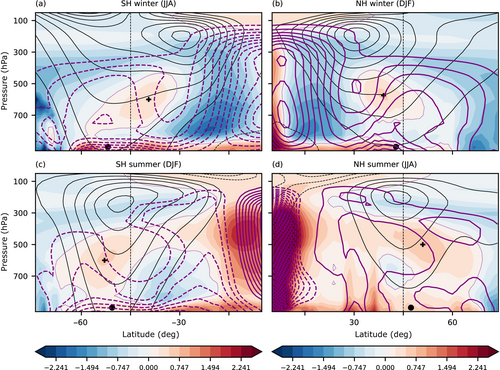
图1. 日本55年再分析1979-2013年平均的指定季节气候态：非绝热加热（填色，单位 K day^{-1}）、纬向平均纬向风 ū（黑等值线，单位 m s^{-1}）以及变换欧拉平均剩余环流 Ψ*（紫等值线，单位 ×10^{10} kg s^{-1}）。(a, c) 南半球季节；(b, d) 北半球季节。600 hPa 处黑十字（北半球夏季 (d) 为 500 hPa）标出 Q̄ > 0 的极大值纬度；850 hPa 处黑圆标出 ū 极大值纬度，本文将其定义为涡旋驱动急流。ū 等值线为 ±5, 10, … m s^{-1}，实线为西风，虚线为东风。Ψ* 等值线在两个冬季 (a, b) 为 ±0.2, 0.4, … ×10^{10} kg s^{-1}，在两个夏季 (c, d) 为 ±0.1, 0.2, … ×10^{10} kg s^{-1}。实线为正 Ψ*，虚线为负 Ψ*。DJF：十二月至二月；JJA：七月至八月。
Figure 1. Specified seasonal climatologies of diabatic heating (shading; units of K day^{-1}), zonal-mean zonal wind ū (black contours; units of m s^{-1}), and the transformed Eulerian mean residual circulation Ψ* (purple contours; units of ×10^{10} kg s^{-1}) for Japanese 55-year Reanalysis averaged over 1979-2013. (a, c) Southern Hemisphere (SH) seasons; (b, d) Northern Hemisphere (NH) seasons. Black plus sign at 600 hPa (500 hPa for NH summer, d) indicates the latitude of maximum Q̄ > 0, and black circle at 850 hPa indicates the latitude of maximum ū, which we define to be the eddy-driven jet. Contours for ū at ±5, 10, … m s^{-1} with solid contours indicating westerly winds and dashed contours indicating easterly winds. Contours for Ψ* at (a, b) ±0.2, 0.4, … ×10^{10} kg s^{-1} for both winters and (c, d) ±0.1, 0.2, … ×10^{10} kg s^{-1} for both summers. Solid contours indicate positive Ψ*, and dashed indicate negative Ψ*. DJF, December-February; JJA, July-August.
中纬度环流的维持也被认为强烈受非绝热加热影响（例如 Chang, 2009; Held et al., 2002; Papritz and Spengler, 2015）。瞬变斜压涡旋通过向极涡热通量减小经向温度梯度，随后西风动量的涡旋辐合在其源地纬度驱动正压西风。尽管如此，时间平均斜压性极大值仍局地出现在中纬度，表明存在斜压性恢复过程。Hoskins and Valdes (1990) 认为该恢复来自风暴中的潜热释放，它在同一区域鼓励进一步的涡旋增长。其后若干研究则发现，非绝热加热对维持自由对流层斜压性可能重要，但近地面斜压性维持还依赖其他非绝热过程（例如 Hotta and Nakamura, 2011; Woollings et al., 2016）。相反，Robinson (2006) 认为，若涡旋的总体效果是在斜压性（因而涡旋生成）本已最大处保持甚至增强斜压性，则 EDJ 为自我维持。若涡热通量和涡动量通量配置成驱动经向环流（即费雷尔环流），使其局地增加的斜压性超过涡热通量所减小的斜压性，即可出现这种情况。此时，急流两侧需要经向非绝热加热梯度的局地反转，例如急流极地一侧的正非绝热加热峰，以平衡费雷尔环流上升所造成的动力冷却。观测上很难判断 EDJ 是否自我维持：南北半球冬季的非绝热加热极大值都在 EDJ 赤道一侧，可能表明不存在自我维持急流；夏季则非绝热加热极大值位于 EDJ 极地一侧，可能表明存在自我维持急流（图1）。
The maintenance of the midlatitude circulation has also been suggested to be strongly influenced by diabatic heating (e.g., Chang, 2009; Held et al., 2002; Papritz and Spengler, 2015). Transient baroclinic eddies reduce meridional temperature gradients via poleward eddy heat fluxes, and the subsequent eddy convergence of westerly momentum drives barotropic westerlies at their source latitude. Despite this, the maximum time-mean baroclinicity is localised at Midlatitudes, indicative of a baroclinicity-restoration process. Hoskins and Valdes (1990) considered this restoration process to be due to the latent heat release in storms that encourages further eddy growth in the same region. A number of subsequent studies have instead found that although diabatic heating may be important for maintaining free-tropospheric baroclinicity, other diabatic processes are important for the near-surface baroclinicity maintenance (e.g., Hotta and Nakamura, 2011; Woollings et al., 2016). Conversely, Robinson (2006) considered the EDJ to be self-maintained if the overall effect of the eddies is to preserve or possibly even enhance the baroclinicity where it, and therefore eddy generation, is already largest. This situation can occur if the eddy heat and momentum fluxes configure themselves in such a way as to drive a meridional circulation (i.e., Ferrel cell) that locally increases the baroclinicity more than the eddy heat fluxes decrease the baroclinicity. In this case, a local reversal in the meridional diabatic heating gradient, such as that associated with a positive diabatic heating peak poleward of the jet, is required across the jet to balance the dynamically induced cooling by Ferrel-cell ascent. It is difficult to determine in observations if the EDJ is self-maintaining as both Northern- and Southern-hemisphere winters exhibit a diabatic heating maximum equatorward of the EDJ, which may indicate the absence of a self-maintaining jet. In summer however, a diabatic heating maximum lies poleward of the EDJ, which may indicate the presence of a self-maintaining jet (Figure 1).
由于双向反馈，确定非绝热加热对环流的影响向来困难。尤其是，中纬度非绝热加热与风暴路径中的潜热释放相联系，后者影响环流，环流又影响后续风暴增长。因此即便在理想化模式中，也几乎无法厘清非绝热加热与环流的相互作用。若干研究用各类干模式（无非绝热反馈）考察加热如何影响 EDJ，往往关注环流对类似全球变暖加热扰动的响应（例如 Baker et al., 2017; Butler et al., 2010; Hassanzadeh and Kuang, 2016; Yuval and Kaspi, 2016）。Nie et al. (2016, 2022) 用通道模式改变近地面与自由对流层的辐射平衡温度，发现急流向所加斜压性极大值移动。他们的结论是：对加热的瞬变演变首先是热成风平衡导致的高层风变化，随即因临界纬度改变而出现高层涡动量通量变化，其后才是低层涡热通量变化。通道模式虽可去掉球面效应，但设置过简，难以与地球 EDJ 对局地加热的响应直接比较。Baker et al. (2017) 用更复杂模式做大集合试验，在多个纬度和高度施加局地非绝热加热。他们发现急流极地一侧加热使急流向赤道移动，赤道一侧加热则相反。Chen et al. (2020) 还指出向赤道与向极急流位移响应在线性程度上的不对称。Baker et al. (2017) 虽根据急流两侧斜压性变化提出机制，但聚焦于平衡响应，无法做细致诊断；本文的瞬变试验可以补上这一点。
Determining the influence of diabatic heating on the circulation is notoriously difficult due to two-way feedbacks. In particular, midlatitude diabatic heating is associated with latent heat release in the storm tracks, which then influences the circulation and in turn affects future storm growth. Determining the interplay between diabatic heating and the circulation is therefore nigh impossible, even in idealised models. A number of studies have utilised variants of dry models (without diabatic feedbacks) to examine how heating affects the EDJ, oftentimes with a general focus on the response of the circulation to global-warming-like heating perturbations (e.g., Baker et al., 2017; Butler et al., 2010; Hassanzadeh and Kuang, 2016; Yuval and Kaspi, 2016). Nie et al. (2016, 2022) used a channel model and changed the radiative-equilibrium temperature both close to the surface and in the free troposphere, finding that the jet shifted towards the imposed maximum baroclinicity. They concluded that the transient evolution in response to the heating was firstly a change in the upper level winds due to thermal-wind balance, rapidly followed by a change in the eddy momentum fluxes aloft due to the modification of the critical latitudes, before a change in the eddy heat flux below. However, although a channel model allows a removal of the effects of sphericity, it provides too simple a set-up to make direct comparisons with the Earth's EDJ response to localised heating. Baker et al. (2017) used a more complex model to perform a large ensemble of experiments wherein they applied localised diabatic heating at a multitude of latitudes and heights. They found that heating on the poleward side of the jet shifted the jet equatorward, and vice versa for heating on the equatorward flank. Further, Chen et al. (2020) highlighted an asymmetry between the linearity of the response to such an equatorward or poleward jet shift. Although in Baker et al. (2017) mechanisms were suggested based on changes in the baroclinicity across the jet, the focus on the equilibrated response precluded any detailed diagnosis, something that the transient experiments conducted here can address.
气候变化预估提供了进一步动机。EDJ 与风暴路径被预估向极移动（例如 Barnes and Polvani, 2013），整体水汽含量预期增加（例如 Held and Soden, 2006），中纬度非绝热加热也被预估会变化（Lachmy, 2022）。这类非绝热加热变化可与风暴路径潜热释放增加（例如 Tamarin and Kaspi, 2017）以及云辐射效应（例如 Ceppi and Hartmann, 2016）相联系，二者都被认为可能参与 EDJ 位移。这类预估所用模式过于复杂，难以分离过程，因而本文这类理想化试验特别合适。
Further motivation is provided by climate change projections. The EDJ and storm tracks are projected to shift poleward (e.g., Barnes and Polvani, 2013), the overall moisture content is expected to increase (e.g., Held and Soden, 2006), and midlatitude diabatic heating is predicted to change (Lachmy, 2022). Such diabatic heating changes can be associated with an increase in latent heat release in the storm tracks (e.g., Tamarin and Kaspi, 2017), as well as cloud radiative effects (e.g., Ceppi and Hartmann, 2016), both of which have been suggested to play a role in the EDJ shift. The complexity of the models used in such projections makes it difficult to isolate processes responsible, and thus idealised experiments, such as those presented here, are particularly apt.
本研究旨在理解局地非绝热加热源如何影响中纬度急流与环流。我们假设非绝热加热的纬度会改变环流调整到新平衡态的方式。原因是非绝热过程、涡动量通量和涡热通量在驱动气候态翻转环流中的相对作用随纬度而变（例如 Yoo and Lee, 2023）。Nie et al. (2016, 2022) 所用通道模式并未计入这种纬度不对称。此外，加热纬度的响应也会因其对局地斜压性、从而对涡旋增长的影响（相对气候态斜压性极大值）而不同。
In this study, our aim is to understand how a localised diabatic heating source affects the midlatitude jet and circulation. It is hypothesised that the latitude of the diabatic heating will affect the way the circulation adjusts to a new equilibrium state. This is due to the fact that the relative roles of diabatic processes, eddy momentum fluxes, and eddy heat fluxes in driving the climatological overturning circulation depend on latitude (e.g., Yoo and Lee, 2023). Indeed, this latitudinal asymmetry was not taken into account by the use of a channel model in Nie et al. (2016, 2022). Additionally, the response to the heating latitude can vary due to its effect on local baroclinicity, and thus eddy growth, in relation to the maximum climatological baroclinicity.
为此，我们使用干大气环流模式，在不同纬度施加局地突然开启的加热扰动。该设置可分离非绝热加热对环流的单向因果效应，而不引入湿反馈这一复杂因素。通过在不同纬度突然开启加热，可以给出环流如何到达新平衡态的一般机制图像。第2节补充自我维持急流的细节，第3节介绍所用再分析资料与理想化模式。第4、5节分别描述平衡响应与瞬变响应，第6、7节分别讨论机制并给出总结。这些试验是纬向对称的理想化加热，不是青藏高原地理试验。
This aim is accomplished by using a dry general circulation model and imposing localised switch-on heating perturbations at various latitudes. The model set-up allows us to isolate the one-way causal effect of diabatic heating on the circulation without the complicating factor of moist feedbacks. By using switch-on heating perturbations at various latitudes, we are able to obtain a general mechanistic picture of how the circulation reaches a new equilibrium state. More details on the self-maintaining jet are provided in Section 2, followed by an introduction to the reanalysis dataset and idealised model that we will use in Section 3. The equilibrated and transient responses are described in Sections 4 and 5 respectively, before a discussion of the mechanisms and a summary in Sections 6 and 7 respectively.
2 中纬度环流的自我维持
2 Self-maintenance of the midlatitude circulation
Robinson (2006) 引入自我维持，用以解释纬向指数（度量纬向平均环流的纬度变率）为何在季节内时间尺度（即 10-100 天）上具有持续性，远长于天气尺度斜压涡旋的典型时间尺度（例如 Gerber and Vallis, 2007; Lorenz and Hartmann, 2001）。具体而言，若涡旋在急流核（相对其他地方）保持甚至增强斜压性，而该处斜压性及涡旋生成本已最大，则认为 EDJ 自我维持。自我维持可看成直接减小斜压性的涡热通量，与增大斜压性的热力间接费雷尔环流之间的竞争。此外，涡旋在高层还向赤道传播，相应的中纬度涡动量通量辐合也贡献于热力间接费雷尔环流。若涡旋空间结构使费雷尔环流的合计效应大于涡热通量效应，则急流被视为自我维持。需要强调，自我维持并不意味着永动机：涡旋在全球尺度上仍减小斜压性。
Robinson (2006) introduced self-maintenance as a way to explain why the zonal index, measuring latitudinal variability of the zonally averaged circulation, exhibits persistence on intraseasonal time-scales (i.e., 10-100 days), considerably longer than typical time-scales of synoptic baroclinic eddies (e.g., Gerber and Vallis, 2007; Lorenz and Hartmann, 2001). In particular, the EDJ is considered to be self-maintaining if the eddies preserve or even enhance the baroclinicity at the jet core (relative to elsewhere) where the baroclinicity, and thus eddy generation, is largest. Self-maintenance can be thought of as a competition between eddy fluxes of heat that directly act to reduce the baroclinicity and the thermally indirect Ferrel cell that increases the baroclinicity. Additionally, given that eddies also propagate equatorward aloft, the associated eddy momentum flux convergence at Midlatitudes contributes to a thermally indirect Ferrel cell. If the spatial structure of the eddies is such that the combined Ferrel cell effect is larger than the effect of the eddy heat fluxes, then the jet is considered self-maintaining. It is important to note that self-maintenance does not imply perpetual motion: eddies still reduce baroclinicity globally.
自我维持或许在变换欧拉平均（TEM）框架中最清楚。该框架下自我维持有两个相关关键特征：(1) 急流核处伊莱亚森-帕尔姆（EP）通量散度的局地峰值；(2) 剩余环流的 U 形，可用准地转纬向平均纬向动量方程理解（例如 Andrews et al., 1987）：
Self-maintenance is perhaps best explicated in the transformed Eulerian mean (TEM) framework. In this framework, self-maintenance exhibits two key related signatures: (1) a local peak in the Eliassen-Palm (EP) flux divergence at the jet core, and (2) a U-shape in the residual circulation, which can be understood using the quasi-geostrophic zonal-mean zonal momentum equation (e.g., Andrews et al., 1987):
∂ū/∂t = f v̄* + ∇·F + F_r ，(1)
∂ū/∂t = f v̄* + ∇·F + F_r , (1)
其中符号为常规用法（注：F = [-u'v'̄, f v'θ'̄ / θ̄_p] 为 EP 通量，带星号量为剩余环流，F_r 为摩擦）。就特征 (1) 而言，向上传播的斜压波活动在对流层低层辐散（∇·F > 0）、在高层辐合（∇·F < 0），从而减小垂直风切变及斜压性。但若高层波活动的经向通量足够大，在急流核造成 ∇·F 的局地极大，则与下方宽广的 ∇·F > 0 极大值一起，斜压性在急流核被减小得最少，两侧更有效。就特征 (2) 而言，∇·F 局地极大对应 v̄* 局地极小，因而急流极地一侧 ∂v̄*/∂y > 0，赤道一侧 ∂v̄*/∂y < 0。由剩余环流连续性（∂v̄*/∂y + ∂ω̄*/∂p = 0），极地一侧 ∂ω̄*/∂p < 0，赤道一侧 ∂ω̄*/∂p > 0。这类环流细胞必须向下闭合（Haynes et al., 1991），因而极地一侧需要上升、赤道一侧需要下沉。剩余环流的这一 U 形在急流两侧局地增大温度梯度，给出自我维持急流（例如 Kidston et al., 2010）。
in which the notation is standard (NB: F = [-u'v'̄, f v'θ'̄ / θ̄_p] is the EP flux, starred quantities indicate the residual circulation, and F_r is friction). Regarding (1), upward-propagating baroclinic wave activity diverges from the lower troposphere (∇·F > 0) and converges aloft (∇·F < 0), acting to decrease the vertical wind shear, and thus baroclinicity. However, if the meridional flux of wave activity aloft is large enough to create a local maximum in ∇·F at the jet core, then, in tandem with the broad maximum in ∇·F > 0 below, the baroclinicity is reduced least effectively at the jet core compared with in the flanks. In terms of (2), therefore, a local maximum in ∇·F is associated with a local minimum in v̄*, so that ∂v̄*/∂y > 0 on the poleward flank of the jet and ∂v̄*/∂y < 0 on the equatorward flank. Via continuity of the residual circulation, (∂v̄*/∂y + ∂ω̄*/∂p = 0), ∂ω̄*/∂p < 0 on the poleward flank and ∂ω̄*/∂p > 0 on the equatorward flank. Because such circulation cells must close downward (Haynes et al., 1991), this requires upwelling on the poleward flank and downwelling on the equatorward flank. This U-shape in the residual circulation locally increases the temperature gradient across the jet, giving a self-maintaining jet (e.g., Kidston et al., 2010).
非绝热加热在这一概念中隐含地起重要作用。其角色可用 TEM 纬向平均位温收支的准地转定常形式阐明；完整形式见 Andrews and McIntyre (1978)：
Diabatic heating implicitly plays an important role in this concept. Its role can be elucidated using the quasi-geostrophic, steady-state form of the TEM zonal-mean potential-temperature budget, for the full form, see Andrews and McIntyre (1978):
ω̄* ∂θ̄/∂p ≈ Q̄ ，(2)
ω̄* ∂θ̄/∂p ≈ Q̄ , (2)
其中 ω̄* 是剩余环流的垂直分量，θ、Q、p 分别为位温、非绝热加热和气压。对具有剩余环流特征 U 形的自我维持急流，ω̄* 必须沿向极方向局地由正变负，从而要求 Q̄ 局地由负变正。尽管动力学试图局地增大斜压性，非绝热加热却试图减小它。相反，无剩余环流特征 U 形的非自我维持急流中，非绝热加热向极单调减小。因此，尽管 Robinson (2006) 的自我维持概念并未显式提及非绝热加热，它必须位于急流极地一侧，以便局地减小斜压性。
where ω̄* is the vertical component of the residual circulation and θ, Q, and p are the potential temperature, diabatic heating, and pressure respectively. For a self-maintaining jet exhibiting the characteristic U-shape in the residual circulation, ω̄* must locally change from positive to negative in the poleward direction, requiring Q̄ to locally change from negative to positive. Even though the dynamics are trying to locally increase the baroclinicity, diabatic heating is trying to decrease it. Conversely, for a non-self-maintaining jet with no characteristic U-shape in the residual circulation, diabatic heating decreases monotonically towards the Pole. Thus, even though diabatic heating is not explicitly mentioned in the self-maintenance concept (Robinson, 2006), it is necessitated to sit poleward of the jet so as to locally decrease the baroclinicity.
非绝热加热与 EDJ 之间理论与观测关系相对不清楚，构成了本研究的关键动机。理解上的主要障碍之一是：非绝热加热最终来自风暴中的潜热释放，因而动力学与非绝热加热无法拆开。我们用干模式做瞬变试验，考察非绝热加热对环流的单向因果影响，而不引入加热依赖于风暴这一混淆因素。
The relatively poorly understood theoretical and observed relationships between diabatic heating and the EDJ provide key motivation for our work. One of the main hindrances to our understanding is that diabatic heating ultimately occurs as a result of latent heat release in storms so that the dynamics and the diabatic heating cannot be disentangled. Our transient experiments with a dry model provide an examination of the one-way causal influence of diabatic heating on the circulation without the obfuscating factor of the diabatic heating depending on the storms.
3 方法
3 Methods
3.1 再分析资料
3.1 Reanalysis data
用日本55年再分析资料（Kobayashi, 2015）为试验提供动机。所用时段为 1979-2013 年，水平分辨率 2.5° × 2.5°，40 个气压层。全非绝热加热 Q 取大尺度凝结、对流、短波与长波辐射以及垂直扩散加热之和。
The Japanese 55-year Reanalysis dataset (Kobayashi, 2015) is used to motivate our experiments. We use data over 1979-2013 with a 2.5° × 2.5° horizontal resolution and 40 pressure levels. The full diabatic heating Q is calculated as the sum of heating due to large-scale condensation, convection, short-wave and long-wave radiation, and vertical diffusion.
3.2 理想化模式试验
3.2 Idealised model experiments
我们使用地球物理流体动力学实验室（GFDL）谱动力核心（Held and Suarez, 1994），置于 Vallis et al. (2018) 的 Isca 框架下。模式水平分辨率为 T42（2.5° × 2.5°），垂直方向 50 层不等距，从地面到 0.01 hPa。对地面风施加线性阻尼，阻尼率 1 天。模式中的非绝热加热通过牛顿松弛到给定的纬向对称辐射平衡廓线 T_e 实现，自由大气松弛时间尺度 τ_r = 40 天；即 Q ≡ -(T - T_e)/τ_r。
We use the spectral dynamical core of the Geophysical Fluid Dynamics Laboratory (Held and Suarez, 1994) under the Isca framework of Vallis et al. (2018). The model is run at T42 horizontal resolution (2.5° × 2.5°), and with 50 unequally spaced vertical levels spanning the surface to 0.01 hPa. Linear damping of the surface winds is applied with a damping rate of 1 day. Diabatic heating is included in the model by a Newtonian relaxation to a prescribed zonally symmetric radiative-equilibrium profile T_e with a free-atmospheric relaxation time-scale of τ_r = 40 days; that is, Q ≡ -(T - T_e)/τ_r.
对照试验中，辐射平衡廓线取如下形式
For our control run, the radiative-equilibrium profile takes the form
T_e^c = max{ T_min , [315 K - ε sin φ - δ_y sin^2 φ - δ_z log(p/p_0) cos^2 φ] (p/p_0)^κ } ，(3)
T_e^c = max{ T_min , [315 K - ε sin φ - δ_y sin^2 φ - δ_z log(p/p_0) cos^2 φ] (p/p_0)^κ } , (3)
该形式曾用于 Chan and Plumb (2009) 与 McGraw and Barnes (2016)。ε sin φ 项把加热极大值移离赤道，ε 越大位移越大。Held and Suarez (1994) 原设置取 ε = 0 以模拟分点条件，但哈德来环流弱得不真实。我们取 ε = 30，更接近北半球至点条件，并加强哈德来环流与副热带急流。为避免平流层效应带来的复杂，取最低温度 T_min = 200 K，而不像 McGraw and Barnes (2016) 那样令最低温度随纬度变化（他们取 T_min = 200 - ε sin φ）。赤道到极地温度梯度 δ_y = 60 K，垂直递减率 δ_z = 10 K，遵循 Held and Suarez (1994)。
as used in Chan and Plumb (2009) and McGraw and Barnes (2016). The term ε sin φ shifts the maximum heating off the Equator, with the shift increasing for larger ε. The original set-up of Held and Suarez (1994) used a value of ε = 0 to simulate equinoctial conditions, but the Hadley cell was unrealistically weak. We opt to use a value of ε = 30, which better approximates Northern Hemisphere solstice conditions and strengthens the Hadley cell and subtropical jet. To avoid complications associated with stratospheric effects, we use a minimum temperature of T_min = 200 K, rather than also allowing the minimum temperature to vary with latitude as was done by, for example, McGraw and Barnes (2016), who set T_min = 200 - ε sin φ. The Equator-to-Pole temperature gradient is δ_y = 60 K, and the vertical lapse rate is δ_z = 10 K, following Held and Suarez (1994).
扰动试验中，我们把 T_e 改为
For our perturbation experiments, we modify T_e as
T_e^p = T_e^c + T_e' ，(4)
T_e^p = T_e^c + T_e' , (4)
其中高斯扰动 T_e' 取如下形式
where the Gaussian perturbation T_e' takes the form
T_e' = T_e0 exp[ -(φ - φ_c)^2 / (2 φ_w^2) ] × exp[ -(log_{10} p - log_{10} p_c)^2 / (2 p_w^2) ] τ(t) ，(5)
T_e' = T_e0 exp[ -(φ - φ_c)^2 / (2 φ_w^2) ] × exp[ -(log_{10} p - log_{10} p_c)^2 / (2 p_w^2) ] τ(t) , (5)
其中
with
若 t_1 < t < t_2（天）则 τ(t) = 1，否则为 0，(6)
τ(t) = 1 if t_1 < t < t_2 (days), and 0 otherwise, (6)
φ_c（度）与 p_c（Pa）分别给出扰动中心的纬度与气压，T_e0（K）为扰动振幅，φ_w 与 p_w 分别为纬度宽度与气压常用对数（Pa）宽度，t_1 = 30 与 t_2 = 360 为加热开启与关闭日。
and φ_c (degrees) and p_c (Pa) respectively give the latitude and pressure at the centre of the perturbation, T_e0 (K) is the amplitude of the perturbation, φ_w and p_w are the widths of the perturbation in terms of latitude and log_{10} of pressure (Pa), and t_1 = 30 and t_2 = 360 give the heating switch-on and switch-off days.
方程 (5) 中可调参数的选取以日本55年再分析非绝热加热为引导（图1）。具体而言，取 T_e0 = 30 K 以使非绝热加热量级接近再分析（约 0.6 K day^{-1}），φ_w = 6° 给出相近纬度宽度，p_c = 600 hPa 把加热中心放在与观测相近的气压层，p_w = 0.07（log_{10} Pa）给出相近垂直宽度。主要可检验参数是纬度中心 φ_c，在 5°N 到 75°N 每隔 5° 变化，随后聚焦于主要加热试验（即 30°N、45°N 与 60°N），以大致覆盖 Q̄ 年际变率所显示的纬度范围（补充材料图 S1）。
Motivation for choosing the tunable parameters in Equation (5) is guided by the diabatic heating in Japanese 55-year Reanalysis data (Figure 1). In particular, T_e0 = 30 K is chosen to yield a similar diabatic heating magnitude as in reanalysis (~0.6 K day^{-1}), φ_w = 6° yields a similar latitudinal width, p_c = 600 hPa centres the heating at a similar pressure level to observations, and p_w = 0.07 (log_{10} Pa) yields a similar vertical width. Our main testable parameter is φ_c, which represents the latitudinal centre and is varied every 5° between 5°N and 75°N, albeit later focused to our main heating runs (i.e., at 30°N, 45°N, and 60°N) to approximately cover the range of latitudes exhibited by the interannual variability in Q̄ (Supporting Information Figure S1).
图2给出 φ_c = 60°N 的示例试验。可见相对 50 年对照试验（以下简称 CTRL）（图2a），T_e 扰动对应以 60°N 为中心的 Q̄ > 0 异常（图2b,c）。图2d 还给出 600 hPa 上 T_e 与 Q̄ > 0 异常的瞬变演变，滞后 0（即 t_1 = 30）处扰动开启清晰可见。
An example experiment with φ_c = 60°N is shown in Figure 2. It can be seen that, compared with the 50-year control experiment (hereafter CTRL) (Figure 2a), the T_e perturbation is associated with Q̄ > 0 anomalies centred at 60°N (Figure 2b,c). Also shown in Figure 2d is the transient evolution of the T_e and Q̄ > 0 anomalies at 600 hPa, wherein the perturbation switch-on is clear at lag 0 (i.e., t_1 = 30).
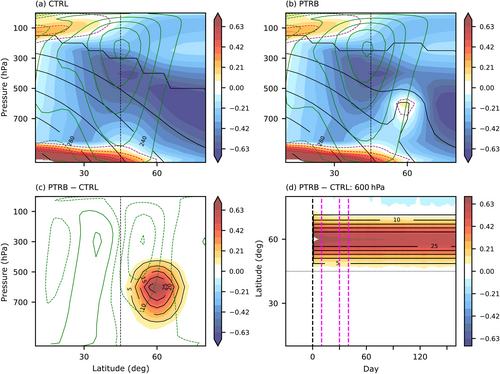
图2. 试验设置：纬向平均非绝热加热 Q̄（填色，单位 K day^{-1}）、辐射平衡温度廓线 T_e（黑等值线，单位 K）以及纬向平均纬向风 ū（绿等值线，单位 m s^{-1}）。(a) 50 年对照试验（CTRL）气候态；(b) 60°N 扰动试验（PTRB）气候态；(c) PTRB − CTRL 差值；(d) 600 hPa 上 PTRB − CTRL 差值时间序列。全场 (a, b) 中 ū 等值线间隔为 ±5, 10, … m s^{-1}，T_e 等值线间隔为 200, 220, … K。差值 (c, d) 中 ū 间隔为 ±1, 2, … m s^{-1}，T_e 间隔为 5, 10, … K。实线为正差值，虚线为负差值。(d) 中品红竖线标出第 3.3 节的滞后阶段。
Figure 2. Experimental set-up showing the zonal-mean diabatic heating Q̄ (shading; units of K day^{-1}), the radiative equilibrium temperature profile T_e (black contours; units of K), and zonal-mean zonal wind ū (green contours; units of m s^{-1}) for (a) 50-year control experiment (CTRL) climatology, (b) the 60°N perturbation experiment (PTRB) climatology, (c) the PTRB − CTRL difference, and (d) the time series of the PTRB − CTRL difference at 600 hPa. For the full fields (a, b) the contour interval for ū is ±5, 10, … m s^{-1}, whereas the contour interval for T_e is 200, 220, … K. For the differences (c, d) the contour interval is ±1, 2, … m s^{-1} for ū and 5, 10, … K for T_e. Solid contours indicate positive differences and dashed indicate negative differences. Magenta vertical lines in (d) indicate the lag stages in Section 3.3.
3.3 突然开启的瞬变试验
3.3 Transient switch-on experiments
为生成突然开启试验，先做每年 360 天的 CTRL。然后在模式每个新年开始处分支，构成集合：30 个模式日后开启加热扰动，并保持到该年结束。由此得到 50 个不同初值的集合成员。由于试验设计，这些瞬变试验的前 30 个模式日与 CTRL 各年对应时段一致。扰动试验以下简称 PTRB。这些突然开启的瞬变试验使我们能分析 CTRL 气候如何过渡到 PTRB 气候。
To generate the switch-on experiments, we first run a CTRL with each year of length 360 days. We then branch off at the start of every new year in the model to generate an ensemble whereby, after 30 model days, the heating perturbation is switched on and remains active until the end of that year. This creates a 50-member ensemble with different initial conditions. Note that, because of the experimental design, the first 30 model days in these transient experiments will match the corresponding period for each year in CTRL. We will refer to the perturbation experiments as PTRB runs hereafter. These transient switch-on experiments allow us to analyse the mechanisms by which the climate in CTRL transitions into the climate of the PTRB experiments.
这里定义若干滞后阶段，以便有足够时间分辨率理解加热响应异常的发展。具体而言，加热开启日后滞后 1-10 为初始阶段，滞后 11-30 与 31-40 为两个中间阶段，滞后 41-330 为平衡阶段。瞬变试验中如此定义平衡阶段，是因为异常已与无限期开启加热的试验非常相似。平衡阶段对起始滞后的改动不敏感。
Various lag stages are defined here to give sufficient temporal resolution for understanding the development of the anomalies in response to the heating. In particular, we define the initial stage as lags 1-10 after the heating switch-on date, two intermediate stages defined as lags 11-30 and 31-40, and the equilibrated stage as lags 41-330. The equilibrated stage in the transient experiments is so defined because the anomalies become very similar to those in a run in which the heating is switched on indefinitely. The equilibrated stage is insensitive to changes in the start lag.
4 结果：平衡响应
4 Results: equilibrated response
我们先描述对所加辐射平衡温度扰动的平衡响应（滞后 41-330）。图3给出 15°N、30°N、45°N、60°N 与 75°N PTRB 试验的 ū PTRB 减 CTRL 差值。CTRL 中气候态 EDJ（定义为 850 hPa ū 极大值）约在 43°N。对所加 T_e' 扰动，响应随 T_e' 相对 CTRL 急流的纬度而大不相同。T_e' 在急流极地一侧时，EDJ 向赤道移动（图3d,e），加热在 60°N 时位移最强（补充材料图 S2）。急流赤道一侧加热则更复杂：20°N 到急流（约 43°N）之间加热使 EDJ 向极移动；若在 20°N 以南（图3a），急流只是加强。向极位移在加热位于 30°N-35°N 时最强（例如图3b）。靠近急流核的加热一般使急流减弱并展宽（图3c）。总体而言，急流响应对 30°N 与 60°N 加热最敏感；加热靠近急流核 45°N 或过偏赤道时，响应性质不同。因此下文聚焦 30°N、45°N 与 60°N 加热试验，它们也覆盖观测中 Q̄ 极大值的年际变率纬度范围（补充材料图 S1）。急流响应与 Baker et al. (2017) 大体一致；但如何到达该状态的机制尚未被考察。
We start by describing the equilibrated response (lags 41-330) to the imposed radiative-equilibrium temperature perturbations. Figure 3 shows the ū PTRB minus CTRL differences for the 15°N, 30°N, 45°N, 60°N, and 75°N PTRB runs. In CTRL, the climatological EDJ (defined as the maximum ū at 850 hPa) is at ~43°N. In response to the imposed T_e' perturbation, there are large differences depending on the latitude of T_e' relative to the CTRL jet. In particular, the EDJ shifts equatorward when T_e' is poleward of the jet (Figure 3d,e), with the strongest shift occurring when heating is at 60°N (Supporting Information Figure S2). However, heating equatorward of the jet is somewhat more complicated: heating between 20°N and the jet (~43°N) shifts the EDJ poleward, but if equatorward of 20°N (Figure 3a) the jet simply strengthens. The poleward shift of the jet is strongest when heating is at 30°N-35°N (e.g., Figure 3b). Heating close to the jet core generally weakens and broadens the jet (Figure 3c). Overall, the jet response is most sensitive to heating perturbations at 30°N and 60°N, with a qualitatively different response when the heating is close to the jet core at 45°N or too far equatorward. For this reason, we focus herein on the 30°N, 45°N, and 60°N heating runs that also span the interannual variability in the maximum Q̄ in observations (Supporting Information Figure S1). The jet responses broadly agree with Baker et al. (2017); however, the mechanisms as to how this state is reached have not been examined.
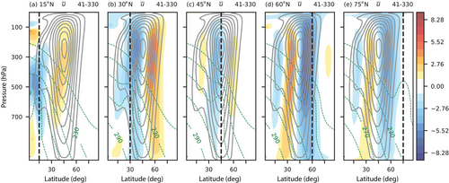
图3. (a) 15°N、(b) 30°N、(c) 45°N、(d) 60°N、(e) 75°N 扰动试验（PTRB）中 ū 的平衡响应（滞后 41-330）。填色为 PTRB 减 50 年对照试验（CTRL）差值；灰等值线为 CTRL 气候态，正值为填色等值线，负值为虚线。黑竖线标出加热极大值纬度。绿等值线为对应 PTRB 试验的 T_e。ū 单位为 m s^{-1}，CTRL 气候态等值线间隔为 ±5, 10, … m s^{-1}。
Figure 3. Equilibrated response (lags 41-330) of ū for the (a) 15°N, (b) 30°N, (c) 45°N, (d) 60°N, and (e) 75°N perturbation experiment (PTRB) runs. Shading shows the PTRB minus 50-year control experiment (CTRL) differences, whereas grey contours show the CTRL climatology with positive values as shaded contours and negative values as dashed contours. Vertical black lines indicate the latitude of the heating maximum. Green contours show T_e for the corresponding PTRB run. Units of ū are m s^{-1} and the CTRL climatological contour interval is ±5, 10, … m s^{-1}.
图4给出 CTRL 与多个 PTRB 试验在 700-400 hPa 气压加权的平衡经向温度梯度（-∂T̄/∂φ）与辐射平衡温度梯度（-∂T_ē/∂φ）。加入负号是为使正梯度表示正斜压性。CTRL 中 -∂T̄/∂φ 一般小于 -∂T_ē/∂φ，表明内部动力学处处减小斜压性，与涡旋由斜压不稳定生成一致。但在急流核附近两线分离最小，且 -∂T̄/∂φ 比 -∂T_ē/∂φ 的宽广极大值更尖锐，表明涡旋虽处处减小斜压性，在急流核处效率最低。
Shown in Figure 4 are the equilibrated 700-400 hPa pressure-weighted meridional gradients of temperature (-∂T̄/∂φ) and radiative-equilibrium temperature (-∂T_ē/∂φ) for CTRL and multiple PTRB runs. Note that the minus sign is included so that a positive gradient means positive baroclinicity. In CTRL, -∂T̄/∂φ is generally smaller than -∂T_ē/∂φ, indicating that the internal dynamics reduce the baroclinicity everywhere, consistent with eddies being generated by baroclinic instability. However, the lines are least separated and -∂T̄/∂φ is more sharply peaked than the broad maximum shown in -∂T_ē/∂φ close to the jet core, indicating that even though eddies everywhere reduce the baroclinicity they do so least effectively at the jet core.
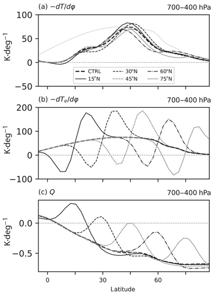
图4. 700-400 hPa 气压加权的纬度廓线：(a) 纬向平均温度梯度 -∂T̄/∂φ；(b) 辐射平衡温度梯度 -∂T_ē/∂φ；(c) 非绝热加热 Q̄。彩色线为 15°N、30°N、45°N、60°N 与 75°N 扰动试验，粗黑虚线为 50 年对照试验（CTRL）。(a, b) 单位为 K deg^{-1}，(c) 为 K day^{-1}。(a) 中浅灰虚线重复 (b) 中 CTRL 的 -∂T_ē/∂φ 作为参照。
Figure 4. Latitudinal profiles of the (a) zonal-mean temperature gradient -∂T̄/∂φ, (b) the radiative equilibrium temperature gradient -∂T_ē/∂φ, and (c) the diabatic heating Q̄ pressure weighted over 700-400 hPa for the 15°N, 30°N, 45°N, 60°N, and 75°N perturbation experiments (coloured lines) and 50-year control experiment (CTRL; thick dashed black line). Units in (a, b) are K deg^{-1}, and in (c) K day^{-1}. Also shown in (a) is a light grey dashed contour repeating the CTRL -∂T_ē/∂φ, from (b), for reference.
PTRB 试验中（图4b），辐射平衡扰动清晰可见：-∂T_ē/∂φ 的偶极横跨 T_e' 中心，扰动极地一侧斜压性增大、赤道一侧减小。尽管 -∂T_ē/∂φ 有很大折曲，各试验中 -∂T̄/∂φ 仍与 CTRL 相似，只是随相应急流位移方向发生纬度平移（图3）：60°N 试验中急流远向赤道离开所加斜压性极大值（75°N 类似但较弱）；30°N 试验中急流远偏极地。45°N 试验中斜压性极大值看似向极移动，实则因其赤道一侧斜压性（及急流）减弱。15°N 试验中斜压性相对 CTRL 只是加强，与急流异常一致（图3）。值得注意的是，急流并不移到 T_e' 极地一侧 -∂T_ē/∂φ 最大处。
In the PTRB runs (Figure 4b), the radiative-equilibrium perturbation is clearly evident with a dipole in -∂T_ē/∂φ straddling the centre of T_e', increasing the baroclinicity poleward of the perturbation and decreasing it equatorward. Despite this large kink in -∂T_ē/∂φ, -∂T̄/∂φ is similar to CTRL in all runs, except with a latitudinal shift corresponding to the direction of the associated jet shift (Figure 3): in the 60°N run, the jet shifts far equatorward of the maximum imposed baroclinicity (75°N is similar, but weaker), and in the 30°N run it sits far poleward. In the 45°N run, the maximum baroclinicity seems to shift poleward, but is due to a weakening of the baroclinicity (and jet) on its equatorward flank. In the 15°N run, the baroclinicity simply strengthens compared with CTRL, agreeing with the jet anomalies (Figure 3). It is interesting to note that the jet does not shift to where -∂T_ē/∂φ is largest on the poleward flank of T_e'.
5 结果：瞬变演变
5 Results: transient evolution
上一节所述具有自我集中斜压性廓线的平衡态是如何到达的？下面考察三个主要加热试验（即 30°N、45°N 与 60°N）在突然开启瞬变试验中的环流发展。
How is the equilibrated state with a self-concentrated baroclinicity profile, as described in the previous section, reached? We now examine the development of the circulation in our transient switch-on experiments for each of the three main heating runs (i.e., at 30°N, 45°N, and 60°N).
5.1 60°N 试验
5.1 The 60°N run
首先考察急流极地一侧加热如何导致环流在平衡态向赤道离开加热及所加斜压性极大值（图3、图4）。
To start, we examine how heating poleward of the jet leads to an equilibrated equatorward shift of the circulation away from the heating and imposed maximum baroclinicity (Figures 3 and 4).
首先给出涡热通量 v'T'̄ 与涡动量通量 u'v'̄ 的变化（图5a、图6a），分别在 850-500 hPa 与 400-100 hPa 平均，以捕捉自由对流层中这些量极大的层次（不同滞后阶段的纬度-高度投影见补充材料图 S3、S4）。立刻可见，v'T'̄ 与 u'v'̄ 的初始变化并未维持到平衡。相对 CTRL，起初 60°N 以南处处 v'T'̄ 减小，更偏极地有小幅增大（图5a），与加热两侧斜压性变化相联系（见第 6.1 节）。这一初始涡旋减弱还对应高层 u'v'̄ < 0（图6a），与气候态比较表明向赤道波传播减弱。约 8-10 天后，加热极大值稍偏赤道的高层出现 ū < 0 异常。随后 u'v'̄ 异常量级增大，偶极 ū 异常发展：约 20-25 天后更偏赤道出现 ū > 0，再约 20 天后低层出现 v'T'̄ > 0。总体而言，斜压性引起的初始响应约 40 天后演变为偶极平衡态，相对 CTRL，v'T'̄ 与 u'v'̄ 量级减小，极大值略向赤道移动。
First, we show the changes in the eddy fluxes of heat v'T'̄ and momentum u'v'̄ (Figures 5a and 6a), averaged over 850-500 hPa and 400-100 hPa respectively, to capture the levels where the variables are maximal in the free troposphere (see Supporting Information Figures S3 and S4 for corresponding latitude-height projections over the different lag stages). It is immediately clear that the initial changes in v'T'̄ and u'v'̄ are not maintained into equilibration. In particular, compared with CTRL, there is initially a decrease in v'T'̄ everywhere equatorward of 60°N, with a small increase farther poleward (Figure 5a), associated with the changes in baroclinicity across the heating (see Section 6.1). This initial eddy weakening is also associated with u'v'̄ < 0 aloft (Figure 6a), which upon comparison with the climatology indicates reduced equatorward wave propagation. Also, after ~8-10 days, ū < 0 anomalies form aloft just equatorward of the heating maximum. As lags progress, the u'v'̄ anomalies become stronger in magnitude, and the dipolar anomalous ū response develops with ū > 0 farther equatorward after ~20-25 days, followed ~20 days later by v'T'̄ > 0 below. Overall, the baroclinicity-induced initial response evolves to reach a dipolar equilibrated state after ~40 days with a decrease in the magnitude of v'T'̄ and u'v'̄ compared with CTRL and a slight equatorward shift of the maximum.
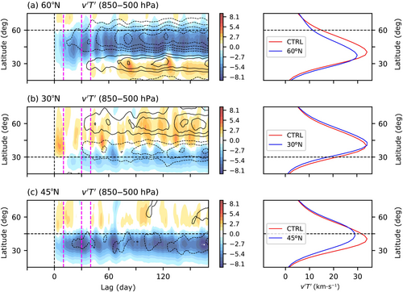
图5. 左：扰动试验（PTRB）减 50 年对照试验（CTRL）差值的纬度-时间投影，为 850-500 hPa 气压加权的涡热通量 v'T'̄（填色，单位 K m s^{-1}）与 ū（等值线，单位 m s^{-1}）。(a) 60°N、(b) 30°N、(c) 45°N PTRB 试验。ū 等值线间隔 ±1, 2, … m s^{-1}。品红竖线为第 3.3 节定义的滞后阶段，黑横线为加热极大值纬度。右：对应 PTRB 气候态 v'T'̄（850-500 hPa 气压加权，平衡滞后阶段 41-330 平均，蓝）以及 CTRL 气候态（红）。
Figure 5. Left: Latitude-time projections of the perturbation experiment (PTRB) minus 50-year control experiment (CTRL) differences of the eddy heat flux v'T'̄ (shading; units of K m s^{-1}) and ū (contours; units of m s^{-1}) pressure weighted over 850-500 hPa, for the (a) 60°N, (b) 30°N, and (c) 45°N PTRB runs. Contour interval for ū is ±1, 2, … m s^{-1}. Vertical magenta lines indicate the lag stages defined in Section 3.3, and horizontal black lines indicate the latitude of maximum heating. Right: Corresponding PTRB climatology of v'T'̄, pressure weighted over 850-500 hPa and averaged over the equilibrated lag stage (lags 41-330; blue) along with the CTRL climatology (red).
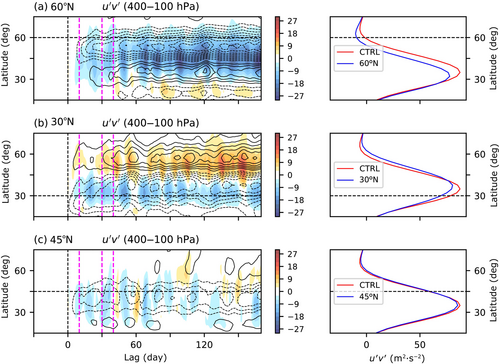
图6. 同图5，但为 400-100 hPa 气压加权的涡动量通量 u'v'̄（填色，单位 m^{2} s^{-2}）与 ū（等值线）。
Figure 6. Same as Figure 5, except for the eddy momentum flux u'v'̄ (shading; units of m^{2} s^{-2}) and ū (contours) pressure weighted over 400-100 hPa.
为确定涡热通量与经向环流在平衡所加加热中的相对作用，下面考察 60°N PTRB − CTRL 纬向平均温度收支的演变差值（例如 Lachmy and Kaspi, 2020，完整收支与符号见该文）：
To determine the relative roles of the eddy heat fluxes and the meridional circulation in balancing the imposed heating, we now examine the 60°N PTRB − CTRL evolution differences of the zonal-mean temperature budget (e.g., Lachmy and Kaspi, 2020, see therein for the full budget and notation):
∂T̄/∂t |_TEND ≈ [-ω̄ ∂T̄/∂p - κ T̄/p] |_ADIA - [1/(a cos φ) ∂/∂φ (v'T'̄ cos φ)] |_EHFC + Q̄ |_Q ，(7)
∂T̄/∂t |_TEND ≈ [-ω̄ ∂T̄/∂p - κ T̄/p] |_ADIA - [1/(a cos φ) ∂/∂φ (v'T'̄ cos φ)] |_EHFC + Q̄ |_Q , (7)
从左到右依次为温度倾向（TEND）、绝热升降运动（ADIA）、经向涡热通量辐合（EHFC）以及非绝热加热（Q）。图7给出方程 (7) 右侧各项在不同滞后阶段平均的 PTRB − CTRL 差值。按构造，正值表示增温倾向，反之亦然。初始响应是加热区内气候态涡热通量辐合减小（图7a、图7c），绝热上升造成的气候态冷却仅小幅增大（图7b）。这些 EHFC 变化对应 Q 赤道一侧 v'T'̄ 立刻减弱（图5）。初始阶段 TEND 量级也可比（补充材料图 S5e）。
where, from left to right, there is the temperature tendency (TEND), the adiabatic rising/sinking motion (ADIA), meridional eddy heat flux convergence (EHFC), and the diabatic heating (Q). Figure 7 shows the PTRB − CTRL differences for each of the terms on the right-hand side of Equation (7) averaged over the different lag stages. By construction, positive values indicate a warming tendency and vice versa. The initial response is a reduction in the climatological eddy heat flux convergence (Figure 7a) in the region of the heating (Figure 7c) with only a small increase in the climatological cooling via adiabatic ascent (Figure 7b). These EHFC changes are associated with immediately weaker v'T'̄ equatorward of Q (Figure 5). During the initial stage, TEND is also of comparable magnitude (Supporting Information Figure S5e).
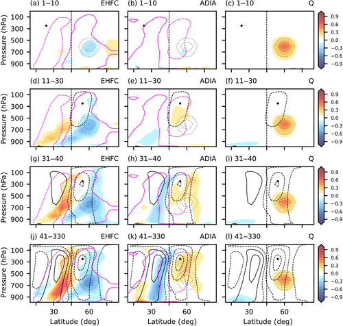
图7. 60°N 扰动试验（PTRB）温度收支方程 (7) 各项（单位 K day^{-1}），按第 3.3 节四个滞后阶段平均：(a, d, g, j) 涡热通量辐合（EHFC）；(b, e, h, k) 绝热垂直运动（ADIA）；(c, f, i, l) 非绝热加热（Q）。填色为 PTRB 减 50 年对照试验（CTRL）差值；单实线与单虚线粉等值线为 CTRL 气候态参照（±0.6 K day^{-1}）；黑实线与黑虚线分别为西风与东风 ū 异常（PTRB − CTRL），等值线 ±1, 3, 5, … m s^{-1}。灰等值线为 T_e 扰动。收支中正值表示增温倾向，反之亦然。
Figure 7. Terms in the temperature budget, Equation (7) (units of K day^{-1}), for the 60°N perturbation experiment (PTRB) run averaged over the four lag stages defined in Section 3.3: (a, d, g, j) eddy heat flux convergence (EHFC); (b, e, h, k) adiabatic vertical motion (ADIA); and (c, f, i, l) diabatic heating (Q). Shading shows the PTRB minus 50-year control experiment (CTRL) differences, single solid and single dashed pink contours indicate the CTRL climatology for reference (±0.6 K day^{-1}), and solid and dashed black contours indicate westerly and easterly ū anomalies (PTRB − CTRL) respectively, with contours at ±1, 3, 5, … m s^{-1}. Grey contours represent the T_e perturbation. Note that positive values in the budget indicate a warming tendency and vice versa.
≥10 天后，异常 EHFC < 0 增强并扩展到非绝热加热区外（图7f,i），更偏赤道的异常增温也加强（图7d,g）。绝热项开始起作用：Q 上方增温（图7e,h），来自费雷尔环流减弱并向赤道移动。偶极风异常也发展：先在 Q 赤道一侧对流层中上层出现 ū < 0，再因 u'v'̄ 变化在 20-30 天后更偏赤道出现 ū > 0（图6a）。还要注意 ū > 0 向下延伸相对 ū < 0 滞后（黑等值线）。Q 赤道一侧 ū < 0 的初始生成来自对所加加热的热成风调整（见第 6.1 节）。
After ≥10 days the anomalous EHFC < 0 intensifies and spreads outside of the region of diabatic heating (Figure 7f,i), along with strengthened anomalous warming farther equatorward (Figure 7d,g). Additionally, the adiabatic term starts to take effect with warming above Q (Figure 7e,h) as a result of a weakening and equatorward shift of the Ferrel cell. Dipolar wind anomalies also develop, with ū < 0 on the mid-to-upper tropospheric equatorward flank of Q occurring first, before ū > 0 developing farther equatorward after 20-30 days due to the changes in u'v'̄ (Figure 6a). Also note the delay in the downward extension of ū > 0 compared with ū < 0 (black contours). The initial generation of ū < 0 on the equatorward flank of Q occurs due to the thermal-wind adjustment to the imposed heating (see Section 6.1).
最后，平衡阶段（滞后 41-330）出现贯穿对流层深度的完整偶极 ū 响应。与 Q 稍偏赤道的 ū < 0 异常一致，Q 内部出现异常绝热下沉/增温（ADIA > 0；图7k,l），抵消异常 EHFC < 0 造成的冷却（图7j 与补充材料图 S5f）。类似地，30°N-45°N 的 ū > 0 略偏于异常 EHFC > 0 增温及异常绝热上升冷却（ADIA < 0）的赤道一侧。这一图像与费雷尔环流在纬度上收缩一致。
Finally, during the equilibrated stage (lags 41-330), a full dipolar ū response is found spanning the depth of the troposphere. Consistent with the ū < 0 anomalies just equatorward of Q is anomalous adiabatic descent/warming inside Q (ADIA > 0; Figure 7k,l) that offsets the cooling due to anomalous EHFC < 0 (Figure 7j and Supporting Information Figure S5f). Similarly, ū > 0 at 30°N-45°N lies slightly equatorward of warming due to anomalous EHFC > 0, and cooling due to anomalous adiabatic ascent (ADIA < 0). This picture is consistent with a latitudinal contraction of the Ferrel cell.
总体而言，对加热赤道一侧斜压性减小的初始响应，是涡热通量及其辐合减弱，用以平衡 Q̄。与加热热成风平衡的东风也在约 50°N 对流层中上层发展。≳20 天后，因向极涡动量通量减弱，更偏赤道出现西风异常。这还伴随费雷尔环流减弱并向赤道收缩。≳40 天后到达准平衡响应，风偶极延伸到对流层低层，给出向赤道急流位移。
Overall, the initial response to the reduction of the baroclinicity equatorward of the heating is a weakening of the eddy heat fluxes and its associated convergence that acts to balance Q̄. In thermal-wind balance with the heating, easterlies also develop in the mid-to-upper troposphere at ~50°N. After ≳20 days, westerly anomalies develop farther equatorward due to weakened poleward eddy momentum fluxes. This is also associated with a weakened and equatorward-contracted Ferrel cell. The quasi-equilibrated response is reached after ≳40 days, wherein the wind dipole extends to the lower troposphere, yielding an equatorward jet shift.
5.2 30°N 试验
5.2 The 30°N run
接下来考察急流赤道一侧加热如何导致环流在平衡态向极移动。
Next, we examine how heating equatorward of the jet leads to an equilibrated poleward shift of the circulation.
图5b 给出 850-500 hPa 平均的 v'T'̄。起初加热极大值极地一侧处处涡热通量大幅增大（v'T'̄ > 0），与加热中心极地一侧斜压性增大有关。但约 15-20 天后，20°N-25°N 开始出现 v'T'̄ < 0，初始 v'T'̄ > 0 异常向极传播，在 CTRL 气候态极大值两侧形成偶极（右图）。总体而言，相对 CTRL 气候态，v'T'̄ 极大值略向极移动，量级变化不大。
Figure 5b shows v'T'̄ averaged over 850-500 hPa. There is initially a large increase in eddy heat flux (v'T'̄ > 0) everywhere poleward of the heating maximum related to the increased baroclinicity poleward of the heating's centre. However, after ~15-20 days, v'T'̄ < 0 starts to develop at 20°N-25°N, and the initial v'T'̄ > 0 anomalies propagate poleward, forming a dipole across the CTRL climatological maximum (right panel). Overall, the maximum v'T'̄ shifts slightly poleward compared with the CTRL climatology, but with little change in magnitude.
图8给出欧拉平均流函数 Ψ_v̄ 的异常
Figure 8 shows anomalies of the Eulerian-mean streamfunction Ψ_v̄
Ψ_v̄ = (2π a cos φ / g) ∫_p^{p_0} v̄ dp ，(8)
Ψ_v̄ = (2π a cos φ / g) ∫_p^{p_0} v̄ dp , (8)
为 30°N 试验在各滞后阶段的平均。a、g、p_0 分别表示地球半径、重力常数与参考气压。对加热的立即响应是 CTRL 哈德来环流内、加热极大值赤道一侧的 Ψ_v̄ < 0 异常（图8a），这是对所加加热的伊莱亚森调整（Eliassen, 1951）。滞后 11-30（图8b）费雷尔环流开始变化，CTRL 费雷尔环流赤道一侧出现 Ψ_v̄ > 0 异常。这表明费雷尔环流内下沉向极移到加热区外。滞后 >31 出现第三个异常环流细胞，50°N-70°N 为 Ψ_v̄ < 0，与西风异常（ū > 0；图8c,d）相联系。加热极大值极地一侧的 Ψ_v̄ 偶极合在一起，表明费雷尔环流向极移动，加热区内下沉减弱。
for the 30°N run averaged over the various lag stages. Note that a, g, and p_0 indicate the Earth's radius, gravitational constant, and reference pressure respectively. The immediate response to the heating is a Ψ_v̄ < 0 anomaly equatorward of the maximum heating inside the CTRL Hadley cell (Figure 8a), which occurs as an Eliassen adjustment to the imposed heating (Eliassen, 1951). By lags 11-30 (Figure 8b) the Ferrel cell has started to change, with Ψ_v̄ > 0 anomalies on the equatorward flank of the CTRL Ferrel cell. This indicates a poleward shift of the descent inside the Ferrel cell to outside of the heating region. Lags >31 show the development of a third anomalous circulation cell with Ψ_v̄ < 0 at 50°N-70°N, associated with the westerly anomalies (ū > 0; Figure 8c,d). Together, the Ψ_v̄ dipole poleward of the heating maximum indicates a poleward-shifted Ferrel cell with reduced descent inside the heating region.
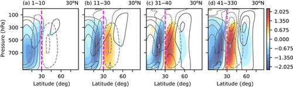
图8. 30°N 扰动试验（PTRB）减 50 年对照试验（CTRL）的欧拉平均流函数 Ψ_v̄ 差值（填色，单位 ×10^{10} kg s^{-1}），按第 3.3 节四个滞后阶段平均。灰等值线为 CTRL 气候态 Ψ_v̄，间隔 ±2.5, 7.5, … ×10^{10} kg s^{-1}。黑实线与黑虚线分别为 PTRB − CTRL 西风与东风 ū 差值，等值线 ±1, 3, … m s^{-1}。紫竖线为所加加热极大值纬度。
Figure 8. Eulerian-mean streamfunction Ψ_v̄ for the 30°N perturbation experiment (PTRB) minus 50-year control experiment (CTRL) differences in shading (units: ×10^{10} kg s^{-1}), averaged over the four lag stages defined in Section 3.3. Grey contours show the CTRL climatology of Ψ_v̄ with a contour interval of ±2.5, 7.5, … ×10^{10} kg s^{-1}. Solid and dashed black contours indicate the PTRB − CTRL westerly and easterly ū differences respectively, with contours at ±1, 3, … m s^{-1}. Vertical purple line shows the latitude of maximum imposed heating.
图9给出不同滞后阶段的 PTRB − CTRL 温度收支差值。起初 Q̄ > 0（图9c）由异常经向涡热通量辐散冷却（EHFC < 0；图9a）与异常绝热上升冷却（ADIA < 0；图9b）共同平衡，加热区内比例约为 66% EHFC 冷却对 33% ADIA 冷却（补充材料图 S5a）。前者与 Q 极地一侧增强的 v'T'̄ 相联系（图5b）。后者与早期滞后的较弱哈德来环流一致（图8a）。这些滞后上，垂直涡热通量辐合项与温度倾向（TEND > 0）也不可忽略（补充材料图 S5a）。此时已有风异常：副热带对流层上层东风异常，约 50°N 有较弱西风异常。东风可由对加热的热成风调整预期（见第 6.1 节）。西风异常来自早期涡动量通量变化（图6b）。
Figure 9 shows the PTRB − CTRL temperature-budget differences for the different lag stages. Initially, Q̄ > 0 (Figure 9c) is balanced by a combination of cooling associated with anomalous meridional eddy heat flux divergence (EHFC < 0; Figure 9a) and anomalous adiabatic ascent (ADIA < 0; Figure 9b), with a ratio in the region of the heating of 66% EHFC cooling to 33% ADIA cooling (Supporting Information Figure S5a). The former is associated with enhanced v'T'̄ poleward of Q (Figure 5b). The latter agrees with the weaker Hadley cell at early lags (Figure 8a). The vertical eddy heat flux convergence term and the temperature tendency (TEND > 0) are also non-negligible at these lags (Supporting Information Figure S5a). Wind anomalies are apparent at these lags, with easterly anomalies in the subtropical upper troposphere, along with weaker westerly anomalies around 50°N. The easterlies are expected due to the thermal-wind adjustment to the heating (see Section 6.1). The westerly anomalies are due to the early eddy momentum flux changes (Figure 6b).
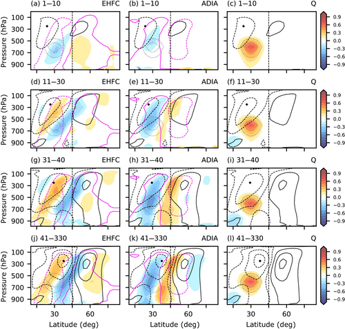
图9. 同图7，但为 30°N 扰动试验。
Figure 9. Same as Figure 7, except for the 30°N perturbation experiment run.
随滞后推进，异常演变与 60°N 试验很不同。副热带 ū 异常并不在纬度上静止，而是在 40 天内从约 23°N 向极迁移，最后落在 CTRL 急流赤道一侧约 37°N。此外，起初主要平衡 Q̄ > 0 的副热带异常 EHFC < 0 也向极迁移到 Q 以北（比较图9a,d,g,j 与图9c,f,i,l），并由 Q 以北绝热下沉增温平衡（图9b,e,h,k）。相反，与哈德来/费雷尔环流副热带下沉减弱相联系的异常绝热冷却（ADIA < 0）在 Q 内部加强，主导平衡收支（亦见补充材料图 S5b）。Q 内部下沉减弱、更偏极地下沉增强，表明费雷尔环流下沉区向极移动（图8）。
As lags progress, the evolution of the anomalies is very different to the 60°N run. In particular, the subtropical ū anomalies do not remain stationary in latitude but migrate poleward over 40 days from ~23°N, before settling at ~37°N on the equatorward flank of the CTRL jet. Additionally, the anomalous subtropical EHFC < 0 that initially mostly balances Q̄ > 0 migrates poleward to sit north of Q (compare Figure 9a,d,g,j with Figure 9c,f,i,l) and is balanced by warming due to adiabatic descent north of Q (Figure 9b,e,h,k). Conversely, the anomalous adiabatic cooling associated with reduced subtropical descent in the Hadley/Ferrel cells (ADIA < 0) strengthens inside Q to dominate the equilibrated balance (also see Supporting Information Figure S5b). The reduced descent inside Q and the enhanced descent farther poleward indicate a poleward shift of the region of Ferrel-cell descent (Figure 8).
更偏极地，约 50°N 的初始 ū > 0 异常随时间增强、略向极移动并向下延伸到地面。该增强还与滞后 ≥41 时以约 65°N 为中心的增强绝热上升相联系（图9k），对应向极移动的费雷尔环流（图8）。与更偏赤道的 ū < 0 异常一起，得到平衡态的向极急流位移。
Farther poleward, the initial ū > 0 anomalies at ~50°N become stronger, shift slightly poleward, and extend down to the surface with time. The strengthening is also associated with enhanced adiabatic ascent centred at ~65°N at lags ≥41 (Figure 9k) corresponding to the poleward-shifted Ferrel cell (Figure 8). In tandem with the ū < 0 anomalies farther equatorward, an equilibrated poleward shift of the jet is found.
为理解 30°N 试验相对 60°N 试验更复杂的演变，除涡动量通量（u'v'̄；图6b）外，我们考察纬向平均动量收支。其形式为（例如 Dima et al., 2005）
To understand the more complicated evolution of the 30°N run compared with the 60°N run, in addition to the eddy momentum fluxes (u'v'̄; Figure 6b), we examine the zonal-mean momentum budget. This takes the form (e.g., Dima et al., 2005)
∂ū/∂t ≈ [f v̄ - v̄ (1/(a cos φ)) ∂/∂φ (ū cos φ)] |_COR - [1/(a cos^{2} φ) ∂/∂φ (u'v'̄ cos^{2} φ)] |_EMFC + F_r ，(9)
∂ū/∂t ≈ [f v̄ - v̄ (1/(a cos φ)) ∂/∂φ (ū cos φ)] |_COR - [1/(a cos^{2} φ) ∂/∂φ (u'v'̄ cos^{2} φ)] |_EMFC + F_r , (9)
这里忽略了中纬度自由对流层一般较小的垂直涡动量通量辐合与垂直平流项。风倾向因而等于作用在经向流上的科里奥利力矩（含经向平流项；COR）、涡动量通量辐合（EMFC）与摩擦（F_r）之和。图10给出不同滞后阶段平均的 COR 与 EMFC：PTRB − CTRL 差值为填色，CTRL 气候态为品红等值线。立刻出现 EMFC 的三极变化（图10a）：25°N-30°N 副热带辐散减弱（EMFC > 0），35°N-50°N 辐合减弱（EMFC < 0），50°N-60°N 辐合增强（EMFC > 0）。结合增强的向上波活动（图5b），图6b 表明相对 CTRL 这些异常对应 45°N-60°N 向赤道波传播增强（向极动量通量更强）以及 25°N-40°N 向赤道传播减弱（向极动量通量更弱）。副热带向赤道传播减弱，很可能来自加热对临界纬度的直接影响，第6节再讨论。50°N-60°N 涡旋诱导的西风倾向驱动加热远极地一侧的初始 ū > 0 异常（图10a）。该三极随滞后加强（图10c,e,g），与 ū 异常不同，没有纬度传播。尤其是 50°N-60°N 的 EMFC > 0 异常继续驱动 CTRL 急流极地一侧的西风 ū 异常，而向极传播的 ū < 0 异常落在 CTRL 急流赤道一侧，该处涡旋驱动东风倾向（EMFC < 0）。这些 u'v'̄ 变化最终驱动平衡风偶极（图3）。
where we have neglected the vertical eddy momentum flux convergence and vertical advection terms which are generally small in the midlatitude free troposphere. The wind tendency is then equal to the sum of the Coriolis torque acting on the meridional flow (including the meridional advection term; COR), the eddy momentum flux convergence (EMFC) and friction (F_r). Figure 10 shows COR and EMFC averaged over the different lag stages for the PTRB − CTRL differences (shading) and CTRL climatology (magenta contours). Immediately, tripolar changes in EMFC (Figure 10a) emerge with reduced subtropical divergence at 25°N-30°N (EMFC > 0), reduced convergence at 35°N-50°N (EMFC < 0), and enhanced convergence at 50°N-60°N (EMFC > 0). In conjunction with the enhanced upward wave activity (Figure 5b), Figure 6b shows that these anomalies in relation to CTRL are associated with enhanced equatorward wave propagation (stronger poleward momentum fluxes) at 45°N-60°N and reduced equatorward propagation (weaker poleward momentum fluxes) at 25°N-40°N. The reduced equatorward propagation in the Subtropics is likely due to the direct effect of the heating on the critical latitudes, which will be discussed more in Section 6. The eddy-induced westerly tendencies at 50°N-60°N drive the initial ū > 0 anomalies far poleward of the heating (Figure 10a). This tripole strengthens as lags progress (Figure 10c,e,g), with no latitudinal propagation, unlike the ū anomalies. In particular, the EMFC > 0 anomalies at 50°N-60°N continue to drive the westerly ū anomalies on the poleward flank of the CTRL jet, whereas the poleward-propagating ū < 0 anomalies settle on the equatorward flank of the CTRL jet where the eddies drive easterly tendencies (EMFC < 0). These u'v'̄ changes ultimately drive the equilibrated wind dipole (Figure 3).
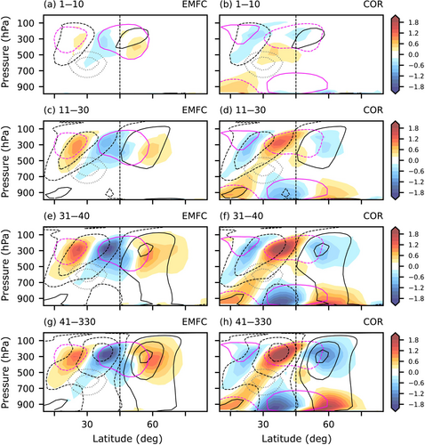
图10. 30°N 扰动试验（PTRB）动量收支方程 (9) 各项（单位 m s^{-1} day^{-1}），按第 3.3 节四个滞后阶段平均：(a, c, e, g) 涡动量通量辐合（EMFC）；(b, d, f, h) 作用在经向流上的科里奥利力矩（COR，含经向平流）。填色为 PTRB 减 50 年对照试验（CTRL）差值；单实线与单虚线粉等值线为 CTRL 气候态参照（±2.5 m s^{-1} day^{-1}）；黑实线与黑虚线分别为西风与东风 ū 异常（PTRB − CTRL），等值线 ±1, 3, 5, … m s^{-1}。灰等值线为 T_e 扰动。
Figure 10. Terms in the momentum budget, Equation (9) (units of m s^{-1} day^{-1}), for the 30°N perturbation experiment (PTRB) run averaged over the four lag stages defined in Section 3.3: (a, c, e, g) eddy momentum flux convergence (EMFC); (b, d, f, h) Coriolis torque acting on the meridional flow (COR including meridional advection). Shading shows the PTRB minus 50-year control experiment (CTRL) differences, single solid and single dashed pink contours indicate the CTRL climatology for reference (±2.5 m s^{-1} day^{-1}), and solid and dashed black contours indicate westerly and easterly ū anomalies (PTRB − CTRL) respectively, with contours at ±1, 3, 5, … m s^{-1}. Grey contours represent the T_e perturbation.
经向环流项（COR；图10b,d,f,h）也有稳健变化。初始三极异常为：对流层上层 20°N-30°N 与 40°N-50°N 为 COR < 0，稍低的 30°N-45°N 为 COR > 0。最显著的是，副热带 COR < 0 提供东风倾向，驱动初始 ū < 0 响应，而涡旋反对这一倾向（EMFC > 0），进一步表明初始风响应与对加热的热成风调整有关。随滞后推进，该三极加强，滞后 11-30 在对流层低层出现反号对应，与环流细胞回流支相联系（图8），并由地面摩擦平衡（未显示）。中纬度异常构成较弱费雷尔环流，>50°N 异常构成较强费雷尔环流。
There are also robust changes in the meridional circulation term (COR; Figure 10b,d,f,h). An initial trinity of anomalies is present with COR < 0 at 20°N-30°N and 40°N-50°N in the upper troposphere, and COR > 0 at 30°N-45°N slightly lower. Most notably, the subtropical COR < 0 provides an easterly tendency that drives the initial ū < 0 response, whereas the eddies oppose this tendency (EMFC > 0), which is further evidence of the initial wind response being related to the thermal-wind adjustment to the heating. As lags progress, the trinity becomes stronger and an opposite-signed lower tropospheric counterpart develops by lags 11-30, associated with the return branches of the circulation cells (Figure 8), and being balanced by surface friction (not shown). The midlatitude anomalies constitute a weaker Ferrel cell, whereas the anomalies at >50°N constitute a stronger Ferrel cell.
总体而言，尽管平衡纬向风响应相似只是符号相反，30°N 试验的演变与 60°N 试验很不同。30°N 试验有三个 60°N 试验所无的关键特征：(1) 初始副热带异常在前 40 天向极传播到中纬度；(2) 所加非绝热加热扰动起初（主要）由增强的向极涡热通量平衡，后期则仅由绝热下沉减弱造成的冷却平衡；(3) 立刻出现并维持到平衡的涡动量通量变化。理解这些为何发生对阐明机制至关重要，见第6节。
Overall, the 30°N run evolves very differently to the 60°N run, despite the fact that the equilibrated zonal-wind responses are similar, albeit with opposite sign. Three key features of the 30°N run that are not present in the 60°N run are (1) the poleward propagation of initial subtropical anomalies to Midlatitudes over the first 40 days, (2) the imposed diabatic heating perturbation initially being (mostly) balanced by enhanced poleward eddy heat fluxes, but being balanced solely by cooling associated with reduced adiabatic descent at later lags, and (3) the immediate eddy momentum flux changes that are maintained into equilibration. Understanding why these occur is essential for elucidating the mechanisms, and this is discussed in Section 6.
5.3 45°N 试验
5.3 The 45°N run
加热放在气候态急流核时，动力学再次不同。这里简要描述如何到达平衡态：环流与涡旋总体减弱、急流展宽（图3c），尽管所加斜压性极大值位于急流极地一侧。
When the heating is placed at the climatological jet core, different dynamics are again found. We briefly describe here how the equilibrated state, which showed an overall weakening of the circulation and the eddies and a broadening of the jet (Figure 3c), is reached, despite the fact that the maximum-imposed baroclinicity is poleward of the jet.
与其他试验类似，初始态与平衡态相当不同。起初加热赤道一侧涡热通量减弱、极地一侧增强（图5c），二者共同平衡所加加热（温度收支见补充材料图 S6 与图 S5c,d）。随滞后推进，对加热的平衡（补充材料图 S6c,f,i,l）几乎完全由加热极大值稍偏赤道的较弱涡热通量维持，更偏极地的初始较强涡热通量消失（补充材料图 S6a,d,g,j）。伴随较弱涡旋，高层涡动量通量（图6c）以及费雷尔环流的中纬度上升与副热带下沉都减弱（补充材料图 S6b,e,h,k）。
Similar to the other runs, the initial and equilibrated states are quite different. Initially, eddy heat fluxes weaken equatorward and strengthen poleward of the heating (Figure 5c), which together act to balance the imposed heating (see temperature budget in Supporting Information Figures S6 and S5c,d). As lags progress, balance to the heating (Supporting Information Figure S6c,f,i,l) is maintained almost entirely by the weaker eddy heat fluxes just equatorward of the maximum heating, with the initial stronger eddy heat fluxes farther poleward disappearing (Supporting Information Figure S6a,d,g,j). In association with the weaker eddies, both the eddy momentum fluxes aloft (Figure 6c) and the midlatitude ascent and subtropical descent in the Ferrel cell weaken (Supporting Information Figure S6b,e,h,k).
6 对不同加热响应的机制
6 Mechanisms for the varied responses to the imposed heating
三个主要 PTRB 试验的初始态与平衡态差别很大。试验虽然简单，不同纬度加热响应演变的机制不对称相当突出。这里讨论平衡态如何到达。
The three main PTRB experiments exhibit very different initial and equilibrated states. Despite the simplicity of the experiments, the mechanistic asymmetry of the evolution of the response to heating at different latitudes is quite remarkable. Here, we discuss mechanisms as to how the equilibrated states are reached.
6.1 初始响应
6.1 Initial response
加热开启后的初始响应（滞后 1-10）可分为 (1) 对加热的热成风调整，以及 (2) 涡旋变化（涡动量通量 u'v' 与涡热通量 v'T'）。热成风调整伴随翻转经向环流、温度梯度或斜压性、以及纬向风的相关变化。异常上升出现以平衡加热区，常称为 Eliassen 调整（Eliassen, 1951）。因为加热极大值极地一侧 -dT/dphi > 0、赤道一侧 -dT/dphi < 0，热成风平衡要求垂直风切变相应变化（式 10）：加热极大值赤道一侧对流层中上层 u < 0，极地一侧 u > 0。科里奥利参数使赤道一侧 u 异常大于极地一侧。
The initial response (lags 1-10) to the heating switch-on can be separated into (1) a thermal-wind adjustment to the heating and (2) a change in the eddies (both eddy momentum fluxes u'v' and eddy heat fluxes v'T'). In terms of thermal-wind adjustment, there are related changes in the overturning meridional circulation, temperature gradient or baroclinicity, and zonal wind. Anomalous upwelling occurs to balance the region of the heating, often referred to as the Eliassen adjustment (Eliassen, 1951). Because -dT/dphi > 0 poleward of the heating maximum and -dT/dphi < 0 equatorward, thermal-wind balance necessitates corresponding changes in vertical wind shear (Equation 10): u < 0 in the mid-upper troposphere equatorward of the heating maximum, and u > 0 poleward of it. The Coriolis parameter makes the equatorward-flank u anomalies larger than those on the poleward flank.
du/dz = - (g /(a f T)) dT/dphi (10)
du/dz = - (g /(a f T)) dT/dphi (10)
初始涡热通量异常来自加热两侧斜压性变化。其振幅取决于扰动相对 CTRL v'T' 极大值（700-500 hPa 约 38°N）的位置。30°N 试验中加热在该极大值赤道一侧，故加热极地一侧 v'T' > 0 占主导。60°N 试验中加热在极大值极地一侧，故加热赤道一侧 v'T' < 0 占主导。45°N 试验中加热横跨极大值，两叶振幅相近。这些初始 v'T' 响应冷却加热区，见温度收支（图7、图9与补充图 S6）。30°N 试验还因哈德来环流减弱而初始平衡加热（图8-10），因而与另两组不同。
Initial eddy-heat-flux anomalies occur due to baroclinicity changes across the heating. Their magnitudes depend on where the perturbation sits relative to the CTRL v'T' maximum (about 38 N at 700-500 hPa). In the 30 N run the heating is equatorward of that maximum, so v'T' > 0 poleward of the heating dominates. In the 60 N run the heating is poleward of the maximum, so v'T' < 0 equatorward of the heating dominates. In the 45 N run the heating straddles the maximum, so the two lobes have similar magnitude. These initial v'T' responses cool the heating region, as seen in the temperature budget (Figures 7, 9 and Supporting Information Figure S6). The 30 N run is distinct because the heating is also initially balanced by a reduction in Hadley-cell strength (Figures 8-10).
涡动量通量也不同。45°N 与 60°N 试验中，总体向上波活动通量减小，高层向赤道波活动通量也减小。30°N 试验中 u'v' 立刻出现偶极：副热带向赤道传播减弱，中高纬向赤道传播增强。后者在远离加热、CTRL 急流极地一侧驱动初始 u > 0 异常。
Eddy momentum fluxes also differ. In the 45 N and 60 N runs, overall upward wave-activity flux decreases and so does equatorward wave-activity flux aloft. In the 30 N run a dipole in u'v' develops immediately: reduced equatorward wave propagation in the Subtropics and increased equatorward wave propagation in mid-to-high latitudes. The latter drives initial u > 0 anomalies far poleward of the heating, on the poleward flank of the CTRL jet.
6.2 向平衡态的瞬变演变
6.2 Transient evolution to equilibrated state
初始阶段之后，环流演变到离开加热的平衡急流；若加热靠近急流核，则急流减弱并展宽。急流极地一侧加热（60°N）时，先由减弱的涡热通量平衡加热；随后减弱的涡动量通量与收缩的费雷尔环流维持向赤道急流位移，约 40 天后风偶极伸入对流层下层。
After the initial stage, the circulation evolves toward an equilibrated jet that is shifted away from the heating, or weakened and broadened if heating is near the jet core. For heating poleward of the jet (60 N), weakened eddy heat fluxes first balance the heating; later, weakened eddy momentum fluxes and a contracted Ferrel cell maintain an equatorward jet shift, with the wind dipole extending into the lower troposphere after about 40 days.
急流赤道一侧加热（30°N）时，涡热通量起初增强并主导平衡所加加热，同时哈德来环流减弱。初始热成风调整改变副热带临界线与涡动量通量，促使异常从副热带向中纬度约 15° 向极传播。平衡阶段当地热量收支发生转换：较弱的绝热下沉、而非增强的涡热通量，平衡加热（图11）。
For heating equatorward of the jet (30 N), eddy heat fluxes initially strengthen and dominantly balance the imposed heating, while the Hadley cell weakens. The initial thermal-wind adjustment modifies subtropical critical lines and eddy momentum fluxes, encouraging an about 15 degree poleward propagation of anomalies from the Subtropics to Midlatitudes. In the equilibrated stage the local heat budget transitions so that weaker adiabatic descent, rather than enhanced eddy heat fluxes, balances the heating (Figure 11).
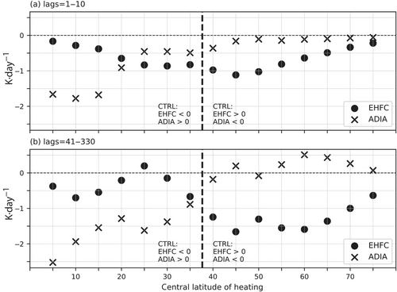
图11. 温度收支式 (7) 中涡热通量辐合（EHFC）与绝热升降（ADIA）项，对所有 5° 间隔 PTRB 试验在相应加热区平均。每组试验中，EHFC 与 ADIA 的 PTRB 减 CTRL 差值在 20° 纬度窗内余弦加权，并在 700-500 hPa 气压加权，以大致覆盖整个加热区。(a) 初始滞后 1-10；(b) 平衡滞后 41-330。黑竖线标出 CTRL 气候态 700-500 hPa 上 EHFC 为零（即涡热通量极大值）与 ADIA 为零的纬度（约 38°N）。
Figure 11. The eddy heat flux convergence (EHFC) and adiabatic rising/sinking (ADIA) terms in the temperature budget, Equation (7), averaged over the corresponding heating region for all of the 5-degree-spaced perturbation experiment (PTRB) runs. For each run, the PTRB minus CTRL differences of EHFC and ADIA are cosine weighted over a 20 degree latitudinal window and pressure weighted over 700-500 hPa to approximately encompass the entire heating region. (a) Initial lags (1-10); (b) equilibrated lags (41-330). The black vertical line indicates both the latitude of zero EHFC (the maximum eddy heat flux) and zero ADIA in the CTRL climatology at 700-500 hPa (about 38 N).
图12概括当地气候态热量收支如何决定平衡抵消。若气候态涡热通量在当地增温（中高纬），则该效应减弱。若气候态翻转环流在当地增温（副热带或热带），则该效应减弱。
Figure 12 summarises how the local climatological heat budget determines the equilibrated balance. If climatological eddy heat fluxes locally warm, as in mid-to-high latitudes, that effect weakens. If climatological overturning circulation locally warms, as in the Subtropics or Tropics, that effect weakens.
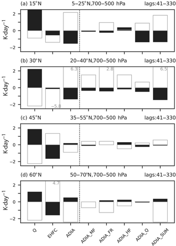
图12. 为平衡所加加热而减弱的当地气候态热量收支项随加热纬度变化的示意。中高纬：气候态涡热通量在当地增温，故该效应减弱。副热带：气候态绝热下沉在当地增温，故该效应减弱。热带：气候态哈德来环流下沉在当地增温，故该效应减弱。
Figure 12. Schematic of the local climatological heat-budget terms that weaken in order to balance an imposed heating, as a function of heating latitude. Mid-to-high latitudes: climatological eddy heat fluxes locally warm, so this effect weakens. Subtropics: climatological adiabatic descent locally warms, so this effect weakens. Tropics: climatological Hadley-cell descent locally warms, so this effect weakens.
6.3 自我维持与动力学不敏感性
6.3 Self-maintenance and dynamical insensitivity
不论加热纬度如何，平衡急流廓线对所加辐射平衡扰动在动力学上不敏感。涡旋在急流核维持一块自我集中的斜压性，并在纬度上离开加热。这种自我集中类似于 Robinson (2006) 的自我维持，但 TEM 剩余环流中典型的 U 形并不出现（图13）。这一点相当突出，因为维持机制随加热纬度剧烈变化。
Regardless of heating latitude, the equilibrated jet profile is dynamically insensitive to the imposed radiative-equilibrium perturbation. Eddies maintain a region of self-concentrated baroclinicity at the jet core, latitudinally shifted away from the heating. This self-concentration is similar to Robinson (2006) self-maintenance, although the typical U-shape in the TEM residual circulation is not present (Figure 13). The insensitivity is remarkable because the maintenance mechanisms vary drastically with heating latitude.
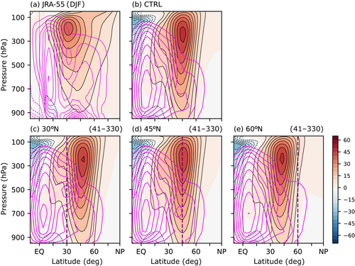
图13. 不同纬度所加加热下，平衡态自我集中斜压性与急流结构的示意。急流核离开加热极大值；即便所加辐射平衡斜压性在加热一侧达峰，涡旋仍把斜压性集中在急流核。
Figure 13. Schematic of the equilibrated self-concentrated baroclinicity and jet structure relative to imposed heating at different latitudes. The jet core sits away from the heating maximum, with eddies concentrating baroclinicity there even though the imposed radiative-equilibrium baroclinicity peaks on a heating flank.
7 总结
7 Summary
我们用干模式，并把突然开启的加热扰动加到辐射平衡温度廓线上，研究了非绝热加热源对环流的单向影响。在不同纬度突然开启扰动，给出环流如何演变到平衡态的一般图像。主要结论如下。
The one-way influence of a diabatic heating source on the circulation has been studied with a dry model and transient switch-on heating perturbations added to the radiative-equilibrium temperature profile. Using switch-on perturbations at various latitudes yields a general picture of how the circulation evolves to an equilibrated state. The main conclusions are as follows.
初始态（约 10 天内）与平衡态（约 40 天以后）一般很不同。机制演变绕急流核不对称：急流赤道一侧加热的演变更复杂，极地一侧或急流核加热则相对简单。
The initial (up to about 10 days) and equilibrated (beyond about 40 days) states are generally very different. The mechanistic evolution is asymmetric around the jet core: heating equatorward of the jet exhibits a more complex evolution than heating poleward, or at the jet core.
初始响应包括热成风调整，以及随加热相对气候态涡热通量极大值位置而变的涡热通量变化。副热带加热（例如 30°N 试验）还会立刻引起涡动量通量变化，很可能经由副热带临界线。
The initial response consists of a thermal-wind adjustment and eddy-heat-flux changes that vary according to where the heating is placed relative to the climatological eddy heat flux maximum. Heating in the Subtropics (for example the 30 N run) also induces immediate eddy-momentum-flux changes, likely via subtropical critical lines.
平衡响应中，中纬度急流或离开加热移动，或在加热靠近急流核时减弱并展宽，或在热带加热时加强，与 Baker et al. (2017) 一致。这些急流变化还叠加哈德来与费雷尔环流变化、涡动量通量，以及对初始涡热通量变化的再调整。
The equilibrated response exhibits a midlatitude jet that either shifts away from the heating, weakens and broadens if heating is close to the jet core, or strengthens if heating is in the Tropics, in agreement with Baker et al. (2017). These jet changes are augmented by Hadley and Ferrel cell changes, eddy momentum fluxes, and a refinement of the initial eddy heat flux changes.
平衡时对所加加热的当地抵消取决于该地气候态热量收支。中高纬气候态涡热通量在当地增温，故该效应减弱。副热带气候态绝热下沉在当地增温，故该效应减弱。热带气候态哈德来环流下沉在当地增温，故该效应减弱。
The local equilibrated balance to an imposed heating depends on the climatological heat budget in that region. At mid-to-high latitudes, climatological eddy heat fluxes locally warm, so this effect weakens. In the Subtropics, climatological adiabatic descent locally warms, so this effect weakens. In the Tropics, climatological Hadley-cell descent locally warms, so this effect weakens.
不论加热位置，平衡态都呈现动力学上不敏感、基本上独立于辐射平衡廓线的急流结构：涡旋在急流核维持自我集中的斜压性，并在纬度上离开所加加热。若不允许更复杂模式中的完全非绝热反馈，下一步可加强非绝热加热与动力过程的反馈，例如只在中纬度上升区施加加热（例如 Xia and Chang, 2014）。
Regardless of heating location, the equilibrated state exhibits a dynamically insensitive jet structure essentially independent of the radiative-equilibrium profile, whereby eddies maintain self-concentrated baroclinicity at the jet core, latitudinally shifted away from the imposed heating. Without allowing full diabatic feedbacks in a more complex model, a next step is to allow a stronger feedback between diabatic heating and the dynamics, perhaps by imposing heating only in regions of midlatitude ascent (for example Xia and Chang, 2014).
致谢
Acknowledgements
感谢三位匿名审稿人的意见，它们明显改进了文稿。IW 也感谢与 Chaim Garfinkel、Chen Schwartz、Seok-Woo Son 和 Changhyun Yoo 的讨论。本研究受以色列科学基金会（Grant no. 1658/18）、特拉维夫大学优秀博士后奖学金以及以色列开放大学博士后奖学金资助。NH 感谢以色列科学基金会研究资助 nos. 1685/17 与 2466/23。
We are thankful for the very helpful comments from three anonymous reviewers that considerably improved the manuscript. IW is also grateful for fruitful discussions with Chaim Garfinkel, Chen Schwartz, Seok-Woo Son, and Changhyun Yoo. This research was supported by the Israeli Science Foundation (Grant no. 1658/18), an excellence postdoctoral scholarship from Tel Aviv University and a postdoctoral scholarship from the Open University of Israel. NH gratefully acknowledges Israeli Science Foundation Research Grants nos. 1685/17 and 2466/23.
尾注
Endnote
形式上，斜压性定义为经向温度梯度除以垂直位温梯度，但本文把斜压性与经向温度梯度互换使用。依据是：在我们的试验中，常用斜压性度量（Eady 增长率）由经向温度梯度变化主导（未展示）。
Formally, baroclinicity is defined as the meridional temperature gradient divided by the vertical potential-temperature gradient, but here the terms baroclinicity and meridional temperature gradient are used interchangeably. This is supported by the fact that, in our experiments, the measure of baroclinicity typically used (the Eady growth rate) is dominated by the change in meridional temperature gradient (not shown).
数据可用性
Data availability
本研究所用模式代码均可自由获取。Vallis et al. (2018) 的 ISCA 框架中的干动力核心可从 https://github.com/ExeClim/Isca 下载。试验中所加加热扰动基于 Model of an Idealised Moist Atmosphere（Jucker and Gerber, 2017）修改，见 https://github.com/mjucker/MiMA。
All the model code used in our study is freely available. The ISCA modelling framework of Vallis et al. (2018) from which we use the dry dynamical core can be downloaded from https://github.com/ExeClim/Isca. The imposed heating perturbations in our runs are based on code modified from the Model of an Idealised Moist Atmosphere (Jucker and Gerber, 2017) found at https://github.com/mjucker/MiMA.
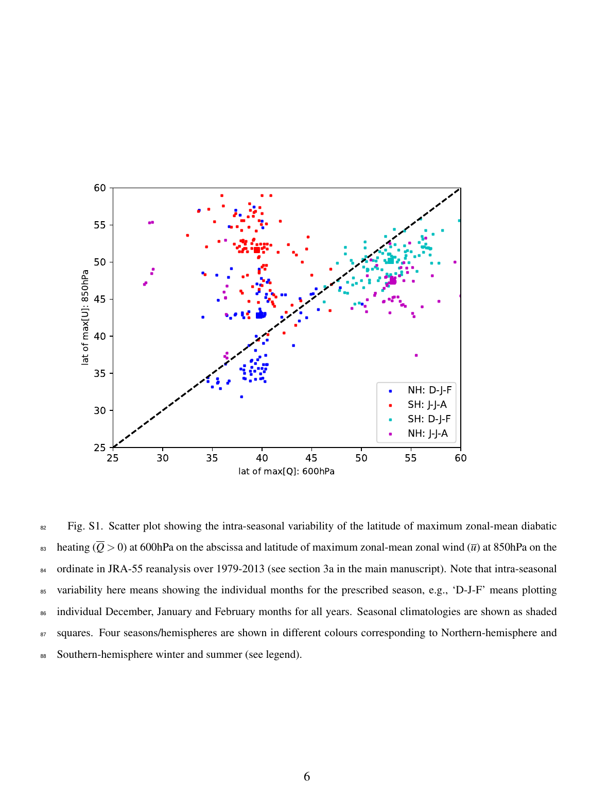
图 S1. JRA-55 1979-2013 年季内变率散点：600 hPa 纬向平均非绝热加热（Q > 0）极大值纬度对 850 hPa 纬向平均纬向风极大值纬度。季节气候态为填色方块。给出四个季节/半球组合。
Figure S1. Scatter plot of intra-seasonal variability of the latitude of maximum zonal-mean diabatic heating (Q > 0) at 600 hPa versus latitude of maximum zonal-mean zonal wind at 850 hPa in JRA-55 over 1979-2013. Seasonal climatologies are shaded squares. Four season/hemisphere combinations are shown.
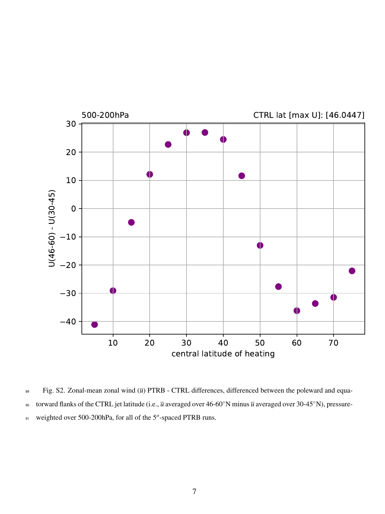
图 S2. 所有 5° 间隔 PTRB 试验中，纬向平均纬向风 PTRB 减 CTRL 差值，再取 CTRL 急流极地一侧与赤道一侧之差（46-60°N 平均 u 减 30-45°N 平均 u），500-200 hPa 气压加权。
Figure S2. Zonal-mean zonal wind PTRB minus CTRL differences, differenced between the poleward and equatorward flanks of the CTRL jet latitude (u averaged over 46-60 N minus u averaged over 30-45 N), pressure-weighted over 500-200 hPa, for all 5-degree-spaced PTRB runs.
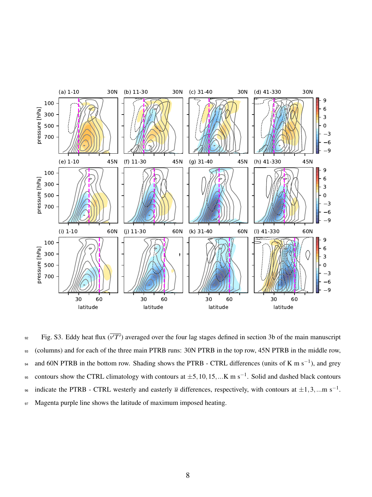
图 S3. 四个滞后阶段（列）平均的涡热通量 v'T'：30°N（上）、45°N（中）、60°N（下）PTRB 试验。填色为 PTRB 减 CTRL（K m s^{-1}）；灰等值线为 CTRL 气候态。
Figure S3. Eddy heat flux v'T' averaged over the four lag stages (columns) for the 30 N (top), 45 N (middle) and 60 N (bottom) PTRB runs. Shading shows PTRB minus CTRL differences (K m s^{-1}); grey contours show CTRL climatology.
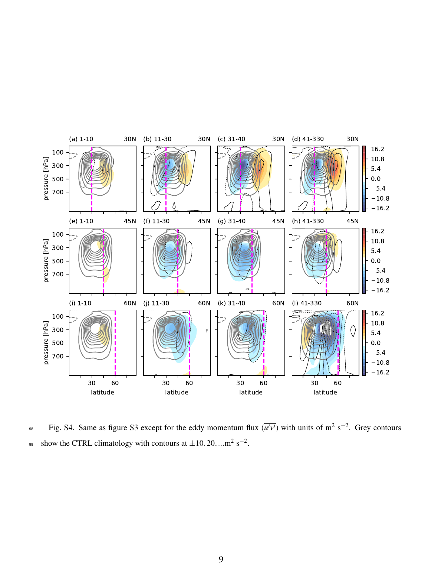
图 S4. 同图 S3，但为涡动量通量 u'v'（m^2 s^{-2}）。
Figure S4. Same as Figure S3 except for the eddy momentum flux u'v' (m^2 s^{-2}).
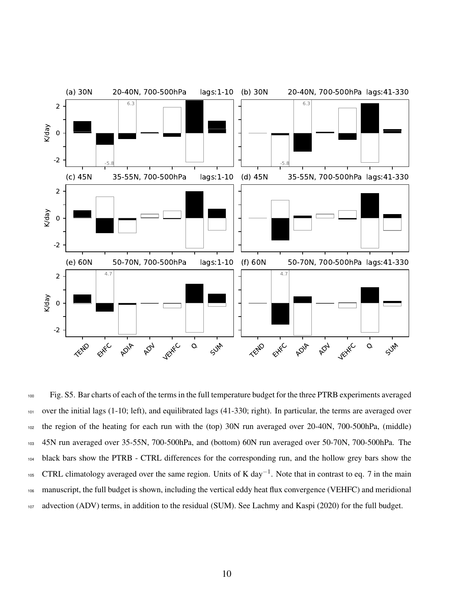
图 S5. 三个 PTRB 试验完整温度收支各项柱状图：初始滞后 1-10（左）与平衡滞后 41-330（右）。各项在加热区平均：30°N 为 20-40°N，45°N 为 35-55°N，60°N 为 50-70°N，均为 700-500 hPa。黑柱为 PTRB 减 CTRL，空心灰柱为 CTRL 气候态。单位 K day^{-1}。完整收支含垂直涡热通量辐合、经向平流与残差。
Figure S5. Bar charts of each term in the full temperature budget for the three PTRB experiments, averaged over initial lags 1-10 (left) and equilibrated lags 41-330 (right). Terms are averaged over the heating region: 20-40 N for 30 N, 35-55 N for 45 N, and 50-70 N for 60 N, all 700-500 hPa. Black bars are PTRB minus CTRL; hollow grey bars are CTRL climatology. Units K day^{-1}. The full budget includes vertical eddy heat flux convergence, meridional advection, and the residual.
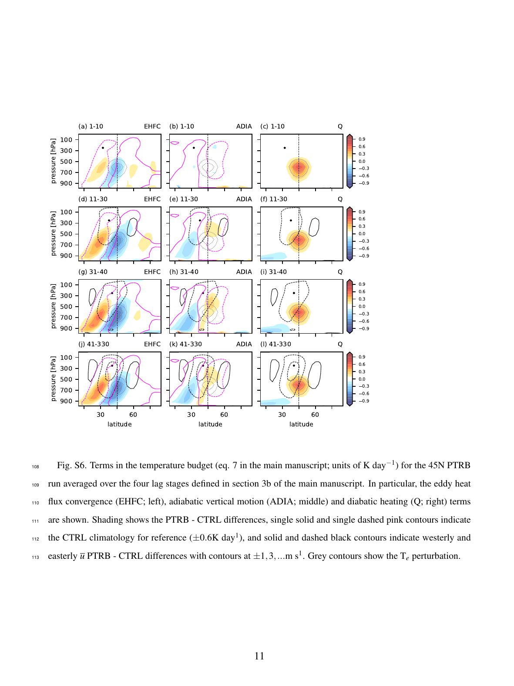
图 S6. 45°N PTRB 试验温度收支式 (7) 各项（K day^{-1}），按四个滞后阶段平均：涡热通量辐合（左）、绝热垂直运动（中）、非绝热加热（右）。
Figure S6. Terms in the temperature budget (Equation 7; K day^{-1}) for the 45 N PTRB run averaged over the four lag stages: eddy heat flux convergence (EHFC; left), adiabatic vertical motion (ADIA; middle) and diabatic heating (Q; right).
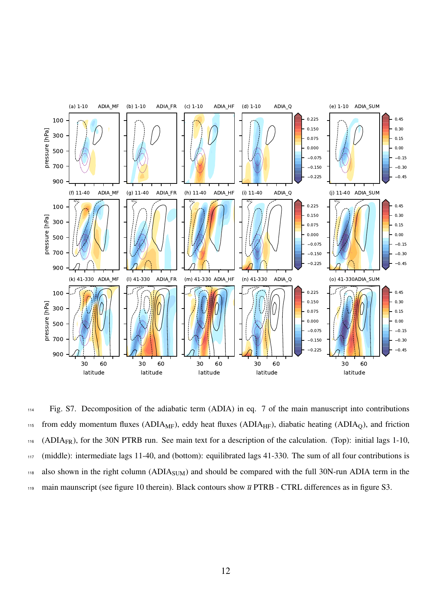
图 S7. 30°N PTRB 试验中，把式 (7) 的绝热项（ADIA）分解为涡动量通量、涡热通量、非绝热加热与摩擦的贡献。上：滞后 1-10；中：滞后 11-40；下：滞后 41-330。
Figure S7. Decomposition of the adiabatic term (ADIA) in Equation 7 into contributions from eddy momentum fluxes, eddy heat fluxes, diabatic heating, and friction, for the 30 N PTRB run. Top: lags 1-10; middle: lags 11-40; bottom: lags 41-330.
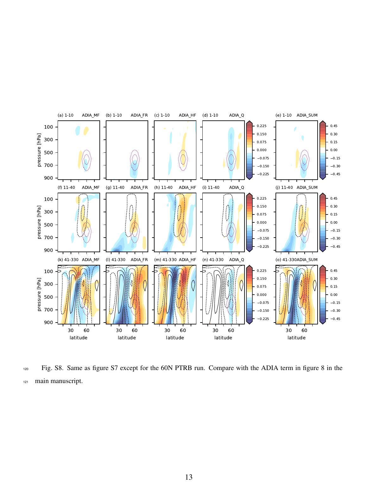
图 S8. 同图 S7，但为 60°N PTRB 试验。
Figure S8. Same as Figure S7 except for the 60 N PTRB run.
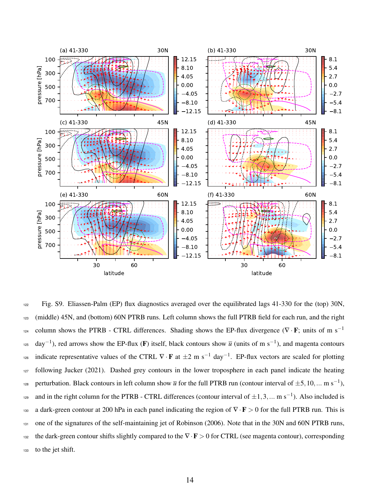
图 S9. 平衡滞后 41-330 平均的 Eliassen-Palm 通量诊断：30°N（上）、45°N（中）、60°N（下）。左为完整 PTRB 场，右为 PTRB 减 CTRL。填色为 EP 通量散度，红箭头为 EP 通量，黑等值线为 u。200 hPa 深绿等值线标出 ∇·F > 0，这是 Robinson (2006) 自我维持的特征之一。
Figure S9. Eliassen-Palm flux diagnostics averaged over equilibrated lags 41-330 for the 30 N (top), 45 N (middle) and 60 N (bottom) PTRB runs. Left: full PTRB field; right: PTRB minus CTRL. Shading is EP-flux divergence; red arrows are EP flux; black contours are u. A dark-green contour at 200 hPa marks ∇·F > 0, one signature of Robinson (2006) self-maintenance.